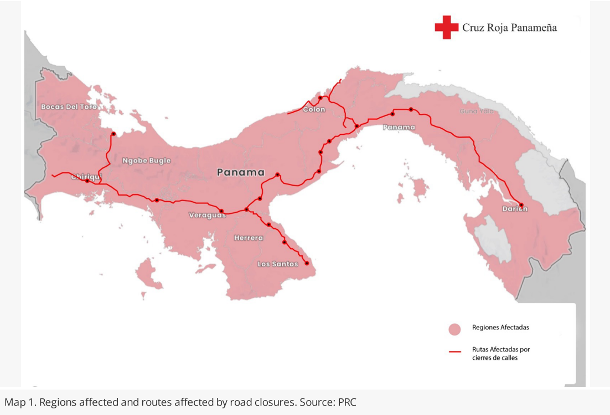

De la promulgación de la Ley 406 al fallo de la Corte Suprema: cuarenta y cinco días, día por día.
Los materiales revisados indican que la revuelta comenzó concretamente entre el 20 y el 22 de octubre de 2023. En cuanto a su finalización, la desmovilización generalizada ocurrió el 2 de diciembre de 2023, día en que se abrieron las vías bloqueadas en todo el país y se levantó la huelga docente tras un acuerdo con el Ministerio de Educación, catalizado por el fallo de la Corte Suprema que declaró la inconstitucionalidad del contrato el 28 de noviembre.
El 2023 fue un año de muchos casos mediáticos de corrupción que impactaron sobre gran parte de la clase política. El Departamento de Estado de los Estados Unidos designó a los expresidentes panameños Juan Carlos Varela y Ricardo Martinelli como inelegibles para ingresar a su territorio debido a su participación en actos de corrupción significativa. En el caso de Varela, las autoridades estadounidenses señalaron que aceptó sobornos a cambio de adjudicar indebidamente contratos gubernamentales durante su gestión como vicepresidente y presidente. De manera similar, a Martinelli se le acusó de mermar la integridad de las instituciones al recibir sobornos a cambio de contratos en proyectos del gobierno, un señalamiento que coincidió temporalmente con la llegada a Panamá de sus hijos tras cumplir una condena en Estados Unidos por los sobornos de la multinacional Odebrecht. A nivel interno, la gestión de los fondos públicos desató fuertes controversias y múltiples investigaciones administrativas. Uno de los mayores escándalos fue la denominada "descentralización paralela", por la cual se presentaron 300 denuncias ante el Ministerio Público para investigar el destino irregular de más de $214 millones, transferidos discrecionalmente a juntas comunales y municipios afines al gobernante Partido Revolucionario Democrático (PRD). Asimismo, la Autoridad Nacional de Transparencia y Acceso a la Información (Antai) inició pesquisas contra el Instituto para la Formación y Aprovechamiento de Recursos Humanos (Ifarhu), luego de que se revelara el gasto de $74.7 millones en auxilios económicos entregados a miles de personas, incluyendo familiares y allegados a diversas figuras políticas. A esta situación se sumó el desembolso de más de un millón de dólares por parte del Ministerio de la Presidencia a favor de una lista de 226 radiocomentaristas, periodistas e incluso políticos activos, con el objetivo de promover y divulgar las obras del Gobierno Nacional. Por otro lado, diversas instituciones del Estado enfrentaron fallos judiciales adversos y graves irregularidades en materia sanitaria. La Corte Suprema de Justicia declaró inconstitucional un beneficio transitorio que otorgaba el 100 % de crédito fiscal a las inversiones de la industria turística desarrolladas fuera del distrito de Panamá, tras determinar que dicha norma violaba los principios constitucionales de igualdad y no discriminación. Finalmente, en el ámbito de la salud pública, la pérdida de 19 mil ampollas del poderoso opioide sintético fentanilo en la farmacia del Complejo Hospitalario de la Caja de Seguro Social (CSS) destapó severas deficiencias gerenciales y operativas. Este suceso dio paso a investigaciones a cargo del Ministerio Público y del Consejo Técnico de Salud, las cuales apuntan a la posible existencia de una red de corrupción institucional que involucraría a unos 50 funcionarios, entre personal médico y administrativo, por el mal manejo de este delicado medicamento controlado (O. Arcia, 2023a; Bustamante, 2023a; E. Morales, 2025; Panamá en Directo, 2023; Panamá Hoy, 2023; Samaniego & Sandoval, 2023; TVN Noticias, 2023).
El Canal de Panamá, una vía esencial que conecta 180 rutas y maneja el 3% del comercio marítimo mundial, enfrentó una crisis sin precedentes debido a una severa sequía agudizada por el cambio climático y el fenómeno de El Niño. A diferencia de otras rutas, este paso interoceánico depende del agua dulce de embalses como el lago Gatún, cuyos niveles críticamente bajos obligaron a la Autoridad del Canal de Panamá (ACP) a reducir el tránsito diario a solo 32 buques y limitar el calado a 13,41 metros. Estas restricciones operativas generaron tiempos de espera prolongados y presionaron al alza los costos de transporte, lo que amenazó con desencadenar escasez de productos y severas alteraciones en las cadenas de suministro globales con impacto directo en los consumidores (Ariet, 2023). Dado que el Canal de Panamá es considerado como un patrimonio muy importante, su negativo estado pudo haber sensibilizado al país de la importancia de cuidar sus recursos naturales.
Aunque Panamá se ha caracterizado por perfeccionar sus normas mediante un sistema participativo de reformas electorales posterior a cada votación, este mecanismo colapsó durante el ciclo de 2021 debido a una profunda crisis de confianza institucional y al deterioro del sistema. El proceso se tornó tan opaco y conflictivo que los propios magistrados del Tribunal Electoral abandonaron los debates legislativos en protesta por propuestas regresivas —como el intento de eliminar la rendición de cuentas de las campañas—, lo que motivó a la sociedad civil a organizarse, elevar el debate público e impulsar múltiples demandas de inconstitucionalidad. En medio de esta pérdida de legitimidad, la tensión se agravó en octubre de 2023 cuando la Asamblea Nacional aprobó una polémica modificación al código electoral a solo seis meses de los comicios. Este sorpresivo cambio, centrado en el impopular "residuo" -un mecanismo para repartir escaños-, fue fuertemente rechazado y percibido por la ciudadanía como una maniobra desesperada de los diputados oficialistas para asegurar sus curules frente a su baja popularidad y bloquear el avance de los candidatos de libre postulación, popularmente conocidos como "independientes" (Nevache, 2024).
En junio de 2023, el Gobierno panameño autorizó la firma de un nuevo contrato minero, presentándolo ante la opinión pública como un gran logro nacional. Posteriormente, tras realizar supuestas consultas ciudadanas en las comunidades directamente afectadas de Donoso y La Pintada durante el mes de septiembre, el Ejecutivo aprobó el documento incorporando modificaciones sugeridas por la Asamblea Nacional. Este procedimiento fue fuertemente cuestionado por su dudosa legalidad, dado que el poder legislativo únicamente tiene la competencia constitucional de aprobar o rechazar este tipo de acuerdos, pero carece de facultades para exigir alteraciones en su contenido. Los cambios introducidos en el texto intentaron apaciguar el rotundo rechazo de los sindicatos, las organizaciones civiles y los pobladores locales. La modificación más destacada fue la eliminación del artículo que le permitía a la empresa solicitar expropiaciones de tierras de forma directa. Sin embargo, en la práctica, este poder de despojo se preservó intacto al clasificar a la minería como una "actividad de interés público". Bajo esta fachada legal, el Estado panameño conservó la autoridad para expropiar terrenos en nombre de la empresa, garantizándole a la concesionaria los privilegios establecidos en el Código de Recursos Minerales (FUNDICCEP & Red Nacional en Defensa del Agua Panamá, 2024).
Las primeras movilizaciones en rechazo al contrato minero provienen de Julio de 2023 con marchas en la capital que rápidamente derivaron en fuertes enfrentamientos con la fuerza pública, dejando como saldo múltiples personas afectadas por gases lacrimógenos. Lejos de apaciguarse, el descontento popular escaló significativamente durante los meses de agosto y septiembre, multiplicando las protestas por las principales arterias, plazas y sedes gubernamentales de la Ciudad de Panamá, en una ola de indignación que terminó expandiéndose y replicándose a lo largo de todas las provincias del país (Defensoría del Pueblo de la República de Panamá, 2023a).
El 20 de octubre de 2023, el presidente Laurentino Cortizo promulgó de manera exprés un nuevo contrato con la minera canadiense First Quantum Minerals bajo la ley 406. Esta apresurada sanción culminó tres décadas de controversias legales y políticas en torno a la explotación de una zona del corredor biológico mesoamericano, un conflicto que se agravó cuando la mina continuó operando al margen de la ley durante cinco años después de que la Corte Suprema declarara inconstitucional su contrato anterior en 2018. El detonante de las protestas fue la imposición de este nuevo acuerdo: a pesar de que las consultas públicas previas -realizadas en el lapso corto de un mes- evidenciaron un rotundo rechazo social hacia el proyecto, el Ejecutivo lo retiró temporalmente solo para hacerle modificaciones mínimas y lograr que la Asamblea Nacional lo aprobara en apenas tres días, firmándolo esa misma noche a espaldas de la voluntad popular (Nevache, 2024).
El Ministro de Comercio e Industria, Alfaro Boyd, presentó el contrato minero como un resultado de las negociaciones y la capacidad de conciliación del gobierno. En redes sociales el ministro escribió lo siguiente el 20 de Octubre: “Hoy el pleno de la Asamblea aprobó en 3er debate el proyecto de Ley 1100 del contrato minero entre el Estado y Minera Panamá, tras 2 años de extensas jornadas de negociación junto a un equipo de expertos comprometidos con lograr los mejores beneficios para el pueblo panameño. La aprobación de esta Ley le hace justicia a Panamá, recibiendo un mínimo de $375 millones, con lo cual se beneficiarán a los jubilados, docentes y comunidades aledañas al proyecto minero. ¡Somos un gobierno que escucha!” (FUNDICCEP & Red Nacional en Defensa del Agua Panamá, 2024).
El veloz proceso de aprobación en la Asamblea Nacional y los repentinos cambios de postura de varios diputados despertaron fuertes sospechas de corrupción, un sentimiento potenciado por la profunda desconfianza ciudadana hacia los partidos y el parlamento. Esta percepción de compra de voluntades se consolidó cuando un legislador disidente y el líder sindical Saúl Méndez denunciaron públicamente el presunto pago de sobornos o "maletinazos", estimando cifras de entre 1,5 y 5 millones de dólares a cambio de cada voto. Aunque nunca se presentaron pruebas formales que sustentaran estas graves acusaciones, la narrativa caló de inmediato en la opinión pública (Nevache, 2024). Lo que sí se corroboro el 7 de Noviembre del 2023 fue que el Ministro de Comercio e Industria, encargado de las negociaciones con la minera, le solicitó al procurador que se abstuviera de emitir sus comentarios críticos de la ley 406 (Palm, 2023b).
Durante los 9 o 10 primeros días de protestas (hasta que terminó Noviembre), hubo cierres de calles que afectaron transversalmente a todas las rutas de transporte y a todas las regiones. A pesar de que el gobierno panameño anunció un nuevo contrato minero con mayores aportes económicos para el Estado, la población mantuvo su firme rechazo y exigió la cancelación del acuerdo, una moratoria minera y un referéndum, priorizando la atención a sus preocupaciones sociales y ambientales. Estas manifestaciones, lideradas principalmente por jóvenes, estuvieron marcadas por fuertes enfrentamientos con la policía, el uso de gases lacrimógenos y diversos actos de vandalismo y robos que afectaron severamente la vida diaria en los principales centros urbanos del país. La creciente inseguridad obligó a las autoridades educativas a decretar el cierre de todas las escuelas a nivel nacional, medida a la que se sumó la Universidad de Panamá y diversas instituciones privadas con la suspensión de sus clases. En un lapso de cinco días, las autoridades reportaron la detención de 521 personas (incluyendo 71 menores de edad) vinculadas a actos vandálicos, así como 37 policías heridos y decenas de daños a comercios, instituciones gubernamentales y vehículos. Además, se registraron agresiones contra el personal de salud y la vandalización de ambulancias en los puntos de bloqueo. Esta crisis también impacto gravemente a la población migrante en tránsito que viaja desde las estaciones de recepción en el Darién hacia Costa Rica. Decenas de autobuses que transportaban a estas personas quedaron varados en zonas como Horconcito y Cañazas debido a los cortes de carreteras. Pese a los intentos de negociación por parte de las autoridades de migración y fronteras para habilitar un corredor, a los autobuses no se les permitió el paso en San Félix, provincia de Chiriquí, lo que obligó a los migrantes a abandonar los vehículos y continuar su larga travesía a pie hasta Paso Canoas. En el ámbito económico y logístico, los cierres de vías provocaron una severa crisis de desabastecimiento generalizado en múltiples provincias. Se reportó escasez de combustible, racionamiento de alimentos en supermercados, falta de insumos para potabilizar el agua e incluso advertencias de posibles cortes eléctricos controlados. La imposibilidad de transportar mercancías causó pérdidas devastadoras en el sector primario, destacando la pérdida estimada de 20.000 quintales de arroz y el desperdicio masivo de productos pesqueros y bienes perecederos; esto se tradujo en estantes vacíos y aumentos de precios, generando pérdidas económicas diarias que la Cámara de Comercio estima entre 60 y 90 millones de dólares (IFREC, 2023).

Las coaliciones opositoras tuvieron una estrategia digital que aprovecho de manera creativa plataformas como TikTok, WhatsApp, X, Instagram, Telegram y Facebook. A través de videos cortos —y frecuentemente virales—, expusieron las graves amenazas de la minería a cielo abierto, tales como la contaminación, el impacto en la biodiversidad tropical y el cambio climático. Además, utilizaron estas redes para transmitir las manifestaciones en vivo, resaltando constantemente los símbolos patrios y la soberanía nacional. Por ejemplo, los pescadores de la provincia de Donoso, conocidos como “los guerreros del mar”, transmitieron por redes sociales sus acciones de protesta en el mar y también la represión que sufrieron por el Estado. Esta intensa movilización digital, impulsada por la ciudadanía, logró neutralizar la millonaria inversión publicitaria que la empresa First Quantum Minerals había inyectado en medios tradicionales como la radio y la televisión. De esta forma, la combinación de activismo en redes sociales y recursos creativos (como la música) se erigió como un auténtico "contrapoder" (Díaz Pinzón & Almeida, 2025).
Distintos grupos protestaron afuera del congreso contra el acuerdo minero que la Asamblea Nacional discutió desde las 11:07am hasta las 8:15pm. Estudiantes, ciudadanos y dirigentes del Sindicato Único Nacional de Trabajadores de la Industria de la Construcción y Similares (Suntracs) participaron gritando consignas y quemando llantas. La policía lanzó bombas lacrimógenas y pepper ball para dispersar la manifestación. El fotógrafo Aubrey Baxter, del colectivo ambientalista Ya es Ya, perdió un ojo al recibir el impacto de un perdigón. Los videos de Baxter con el rostro lleno de sangre se difundieron por todo el país. Mientras tanto, la propuesta legislativa fue aprobada y avanzó en su trámite (O. Arcia, 2023c; Bustamante, 2023b).
La Defensoría del Pueblo de Panamá (2023b) instó a los ciudadanos a ejercer su derecho a la manifestación de forma estrictamente pacífica, con el objetivo de evitar afectaciones a terceras personas y salvaguardar la propiedad privada frente a las movilizaciones desarrolladas en la ciudad capital contra el contrato minero. Asimismo, la institución reconoció el valor histórico de las conquistas sociales pero promovió decididamente el camino del diálogo como la mejor herramienta, con el propósito de alcanzar un entendimiento mutuo. Finalmente, el organismo defensor reiteró la disponibilidad de múltiples mecanismos legales a nivel nacional e internacional, con el fin de investigar y reparar las posibles vulneraciones a los derechos humanos, garantizando al mismo tiempo que toda la población mantuviera su acceso ininterrumpido a la salud, la educación y el trabajo.
La Asamblea Nacional aprobó el contrato con Minera Panamá con 47 votos a favor tras una fugaz sesión legislativa de apenas 40 minutos. Horas más tarde, el presidente Laurentino Cortizo y el ministro de Comercio e Industrias, Federico Alfaro Boyd, buscando oficializar rápidamente el pacto para otorgarle vigencia inmediata y efectos retroactivos, sancionaron el documento esa misma noche y lo promulgaron de forma definitiva en la Gaceta Oficial bajo la denominación de Ley 406 (O. Arcia, 2023b; Reyes, 2023a).
Diversas agrupaciones ciudadanas, conformadas por estudiantes, sindicalistas, ambientalistas y docentes, decididas a impedir la rápida aprobación del contrato minero, paralizaron la capital y otras regiones del país mediante múltiples cierres de avenidas que afectaron severamente el libre tránsito, el servicio del Metro y las jornadas académicas universitarias. Simultáneamente, los líderes sindicales y magisteriales lideraron enérgicas manifestaciones en las inmediaciones del Casco Antiguo para exigir un veto presidencial y anunciaron la continuidad indefinida de las acciones de fuerza en las calles, advirtiendo incluso sobre la inminente convocatoria a una huelga nacional (O. Arcia, 2023b; Reyes, 2023a).
La Defensoría del Pueblo (2024) promovió la investigación de oficio contra la Policía Nacional por los incidentes represivos contra manifestantes del 19 de Octubre alrededor de la Asamblea Nacional. El personal de la Defensoría del Pueblo y los medios de comunicación observaron el uso excesivo de gas irritante, bombas lacrimógenas y pepper ball; así como las consecuencias en los heridos, donde destacó la lesión en el ojo derecho de un fotógrafo.
Diversas organizaciones se manifestaron en contra del acuerdo minero por considerar que tiene efectos negativos para el país. La Red Eclesial Ecológica Mesoamericana emitió un comunicado donde criticó la falta de consulta ciudadana exigida por el Acuerdo de Escazú y condenó la violencia policial ejercida durante las manifestaciones. La Asociación de Educadores de Chiriquí y el sindicato Suntracs anunciaron la suspensión de clases y planificaron el cierre total de la vía Interamericana. La Coordinadora Nacional de Pueblos Indígenas junto al Centro de Incidencia Ambiental (Ciam) llamaron a sus bases a sumarse a las protestas y denunciaron públicamente que la concesión obviaba las normativas vigentes al no haberse sometido a una licitación internacional (O. Arcia, 2023c; H. Cárdenas, 2023a).
La Cámara de Comercio, Industrias y Agricultura de Panamá (Cciap) rechazó los bloqueos de vías por dañar la libre circulación de las personas hacia los trabajos o servicios, lo que argumentaban generaba grandes daños económicos. En esta misma línea, el Consejo Nacional de la Empresa Privada (Conep), buscando salvaguardar la productividad nacional, se sumó al repudio del cierre de calles y exigió a las autoridades que garantizaran el derecho democrático de terceros a ejercer el libre tránsito (Reyes, 2023d).
El Consejo Académico de la Universidad de Panamá decidió suspender las clases presenciales de los días 23 y 24 de octubre en el campus central y otros establecimientos por los llamados a movilizaciones de diversos grupos de la sociedad contra el contrato minero (Reyes, 2023c).
La capital fue escenario de marchas contra el acuerdo minero durante el Domingo 22. En la mañana, miembros del Sindicato Único Nacional de Trabajadores de la Industria de la Construcción y Similares (Suntracs) marcharon en San Miguelito. Cargaban las banderas rojas que distinguen a la organización y letreros con mensajes recriminando a la minería. Por la tarde, ciudadanos panameños de diversas edades, con el propósito de manifestar su enérgico rechazo al contrato extractivo avalado mediante la Ley 406 y defender la biodiversidad del país, se congregaron masivamente en la cinta costera de la capital durante la tarde del 22. Durante esta pacífica jornada ciudadana, los manifestantes, buscando visibilizar su profundo descontento cívico frente al acuerdo pactado con Minera Panamá, vistieron de luto, ondearon banderas nacionales, sonaron pailas y alzaron pancartas en defensa de la vida, mientras coreaban contundentes consignas contra las autoridades al ritmo de la emblemática canción Patria de Rubén Blades. Luego, durante la noche, los manifestantes marcharon hacia Punta Pacífica, cerca de la residencia del mandatario Laurentino Cortizo, para exclamar fuertes consignas en su contra. Simultáneamente, otra facción de ciudadanos indignados se dirigió a la sede del oficialista Partido Revolucionario Democrático (PRD) en la avenida México, lugar en el que hicieron sonar pitos y alzaron sus voces para lanzar duros cánticos donde tildaban a la agrupación política de dictadura. (J. González, 2023a; E. Morales, 2023a; Reyes, 2023b).
Minera Panamá (2023j) anunció la entrada en vigencia de la Ley 406 que aprobaba el nuevo contrato de concesión. La compañía reafirmó su compromiso de ejercer una gestión responsable para generar un impacto continuo y positivo en su fuerza laboral, las comunidades vecinas y el medio ambiente. La empresa minera se comprometió a desembolsar aproximadamente $395 millones en un plazo de 30 días para cubrir los impuestos y regalías adeudados hasta finales de 2022. Asimismo, la concesionaria, en su afán de resaltar su sustancial contribución al desarrollo económico de la nación, estimó que sus pagos totales por estos conceptos para los años 2022 y 2023 alcanzarían los $770 millones, recordando además que sus actividades extractivas representaban el 4.8 % del Producto Interno Bruto y sustentaban unos 40,000 empleos directos e indirectos en el país.
Los sindicatos, ambientalistas y diversos sectores civiles, con el objetivo de rechazar la ley del contrato minero, bloquearon calles estratégicas, paralizaron el tráfico y provocaron el cierre de estaciones del metro en la capital y en provincias como Colón, Chiriquí, Veraguas, Los Santos y Coclé. Durante los enfrentamientos nocturnos, los grupos de manifestantes, con el fin de defender los recursos naturales y resistir a las autoridades, quemaron neumáticos y lanzaron piedras. Frente a esta situación, los efectivos policiales antimotines lanzaron gases lacrimógenos contra las multitudes y detuvieron a al menos veinticinco personas (DW, 2023a).
Los diversos grupos de manifestantes, entre los que se encontraban pobladores indígenas y sindicalistas, bloquearon importantes arterias vehiculares como la vía Interamericana y múltiples avenidas de la capital, lo que desató fuertes choques en sectores como Pacora y el puente de las Américas. Los gremios docentes, buscando respaldar el rechazo nacional frente al acuerdo minero, se sumaron a las protestas en provincias como Chiriquí y Veraguas, donde anunciaron un paro de 48 horas y amenazaron con establecer cierres viales de forma indefinida. En esta misma línea, la Comisión Médica Negociadora Nacional (Comenenal), decidida a frenar un contrato que consideraban inconstitucional para evitar la devastación del Corredor Biológico Mesoamericano y la entrega de la soberanía, se unió a las agrupaciones opositoras y advirtió sobre la posibilidad de iniciar un paro de labores escalonado e indefinido (Aparicio, 2023a).
Los manifestantes, conformados por miembros del Suntracs y agrupaciones indígenas, atacaron a pedradas una ambulancia del Ministerio de Salud mientras se desplazaba por el corregimiento de Las Garzas. Simultáneamente, estos grupos de protesta, con el objetivo de bloquear de forma absoluta el tránsito vehicular en la zona, atacaron con objetos contundentes un pequeño bus de la junta comunal de Pacora e impidieron el avance de los atemorizados ocupantes, quienes clamaban desesperadamente entre lágrimas por continuar su ruta hacia el hospital de la capital para poder recibir sus tratamientos vitales de hemodiálisis (E. Morales, 2023b).
Los abogados Juan Ramón Sevillano, Ernesto Cedeño y Roberto Ruiz Díaz, decididos a invalidar el recién aprobado contrato minero por conceder privilegios excesivos a la empresa extranjera y vulnerar múltiples artículos de la Constitución, presentaron las primeras demandas de inconstitucionalidad contra la Ley 406 ante la Corte Suprema de Justicia. Estos juristas, en su afán de frenar un pacto que consideraban perjudicial por fijar una exigua compensación económica y violar el Acuerdo de Escazú, introdujeron sus recursos legales desde las primeras horas de la mañana, coincidiendo con el inicio de las manifestaciones ciudadanas. La Corte Suprema de Justicia, en su deber de dar trámite a estas acciones legales para iniciar el análisis del polémico acuerdo, repartió rápidamente los expedientes y asignó su conocimiento a las magistradas María Eugenia López, Miriam Cheng y María Cristina Chen. Frente a este escenario judicial, los demandantes, buscando agilizar el proceso y lograr una sentencia contundente contra la concesión, contemplaron la necesidad de que las demandas admitidas se acumularan posteriormente, con el fin de que el pleno emitiera un único fallo definitivo (Aparicio, 2023a).
El Ministerio de Educación anunció a través de un comunicado la suspensión de las clases presenciales en las dieciséis regiones educativas del sector público, aunque ordenó al personal docente y administrativo cumplir estrictamente con su horario laboral y acudir a los planteles. Por su parte, los directivos de las escuelas particulares mantuvieron la potestad de evaluar la situación y decidir de manera independiente el momento oportuno para retomar sus labores académicas (Aparicio, 2023a).
La Defensoría del Pueblo (2024) dictó la Resolución No. 7358a-2023 mediante la cual se ordenó el inicio de una investigación oficiosa para determinar las ocurrencias de las conductas represivas del 19 de Octubre y saber si configuran vulneraciones de Derechos Humanos.
La Defensoría del Pueblo de Panamá (2023c) hizo un llamado urgente para garantizar el respeto a la salud, la integridad personal y la libertad de expresión, con el objetivo de recordar que estos derechos fundamentales no debían ser vulnerados durante el legítimo ejercicio de la protesta social. Asimismo, la entidad defensora denunció los graves ataques perpetrados contra un vehículo que transportaba a pacientes de hemodiálisis, ambulancias del Ministerio de Salud y camiones del Cuerpo de Bomberos, con el propósito de visibilizar el peligro al que fueron expuestos los enfermos en estado crítico, el personal médico y un coronel que resultó herido por el lanzamiento de piedras.
Los obreros afiliados al Sindicato Único Nacional de Trabajadores de la Industria de la Construcción y Similares (Suntracs), con el propósito de defender la soberanía nacional frente a un acuerdo minero que calificaban de "vende patria", bloquearon importantes arterias vehiculares en diversas provincias. Simultáneamente, los gremios docentes junto a grupos estudiantiles universitarios, en su búsqueda por proteger los recursos naturales y exigir la anulación de la recién sancionada Ley 406, decretaron un paro de labores de 48 horas, protagonizaron concentraciones en múltiples puntos del país y marcharon hacia la sede de la Contraloría General de la República para intensificar las jornadas de protesta (Reyes, 2023f).
La empresa Transporte Masivo de Panamá (MiBus) -encargada del transporte público en la capital y otros distritos- suspendió temporalmente su servicio público para garantizar la seguridad frente a las manifestaciones. Además, el Metro de Panamá procedió a clausurar la estación de Pan de Azúcar en San Miguelito, mientras que la Empresa Nacional de Autopistas (ENA), en su afán de alertar a los conductores sobre el impacto vial de esta crisis, reportó múltiples bloqueos a lo largo de los corredores Norte y Sur producto del rechazo generalizado a la sancionada Ley 406 (Reyes, 2023e).
Diversos sectores de la sociedad y una multitud de ciudadanos vestidos de luto protagonizaron multitudinarias marchas pacíficas al ritmo de pailas y bloquearon importantes arterias viales a nivel nacional, desviando incluso sus rutas originales para evitar altercados. Simultáneamente, los agentes policiales antidisturbios, buscando restablecer el libre tránsito y el orden público, se enfrentaron en las calles contra algunos grupos de manifestantes mediante el uso de gases lacrimógenos. Por su parte, el Ministerio Público, con el fin de judicializar a los manifestantes que vandalizaron la sede de la Cámara de Comercio y atacaron vehículos de emergencia y estatales, inició investigaciones. Finalmente, diversas entidades bancarias redujeron sus horarios de atención comercial (H. Cárdenas, 2023b; La Prensa, 2023).
La Defensoría del Pueblo (2023d) hizo un llamado urgente a la directora de la Secretaría Nacional de Niñez, Adolescencia y Familia y a la Policía de Niñez y Adolescencia para que intervinieran de forma inmediata, con el objetivo de garantizar la protección efectiva de los menores involucrados en las manifestaciones contra el proyecto minero. Los funcionarios de la Defensoría evidenciaron la participación directa de niños de 6 a 8 años y de jóvenes de 15 a 17 años en los diversos focos de protesta, con el propósito de alertar sobre el riesgo inminente al que se sometía a esta población al exponerla a claras situaciones de vulnerabilidad durante los conflictos en las calles.
El presidente Cortizo, con el objetivo de rechazar los bloqueos viales, emitió un discurso televisivo y en redes sociales para cargar contra los manifestantes, señalando que sus acciones perturbaban la tranquilidad ciudadana, impedían el acceso a los puestos de trabajo y dificultaban la atención de citas médicas para pacientes en riesgo. El mandatario, con el propósito de justificar la viabilidad del contrato ley frente al creciente rechazo popular, defendió nuevamente este acuerdo minero y afirmó que su aprobación salvaguardaría 9.387 puestos de trabajo, además de generar los ingresos económicos necesarios para garantizar mejores pagos a la población jubilada y pensionada (Monsalve, 2023).
Durante la mañana, la Ciudad de Panamá estuvo casi desierta tras las protestas del día anterior (Swissinfo.ch, 2023a).
Los bloqueos a la carretera Panamericana, que cruza el país y lo comunica con Centroamérica, así como de avenidas de la capital, se repitieron desde temprano en algunos puntos (Swissinfo.ch, 2023a).
Las autoridades policiales arrestaron a Kadir Méndez, hijo del secretario general del Sindicato Único Nacional de Trabajadores de la Industria de la Construcción y Similares (Suntracs), y a otros siete ciudadanos tras una persecución vehicular en la ciudad de David, con el objetivo de procesarlos por la presunta posesión de 37 municiones de escopeta y frustrar un supuesto plan para bloquear el puente sobre el río Risacua. Por su parte, el dirigente sindical Jaime Caballero desmintió la versión oficial y argumentó que los cartuchos encontrados correspondían a los pertrechos abandonados por los propios agentes de seguridad durante represiones previas, con el propósito de defender la inocencia de las personas vinculadas a las protestas contra el contrato minero. Kadir Méndez fue liberado en la noche (J. González, 2023b).
Miembros de la Asociación de Educadores Veragüenses (Aeve) protestaron frente a la residencia que el presidente del gobernante Partido Revolucionario Democrático (PRD), Benicio Robinson, tiene en Rambala, corregimiento de Chiriquí Grande, Bocas del Toro (Grinard, 2023).
Los manifestantes panameños paralizaron prácticamente toda la actividad económica del país durante un quinto día consecutivo de intensas protestas, con el objetivo de rechazar la Ley 406. Múltiples vías en la capital y el país fueron bloqueadas por manifestantes con el propósito de visibilizar su descontento generalizado, lo que dejó a cientos de conductores varados (O. Arcia, 2023d).
Los ministros de Ambiente, miembros de ONG y tomadores de decisiones de la región, con el objetivo de llevar a cabo la Semana del Clima de América Latina y el Caribe, se reunieron en las instalaciones del Hotel Marriot de la capital de Panamá. Un grupo de manifestantes, con el propósito de expresar su rotundo rechazo al contrato minero y visibilizar las consecuencias de esta industria, llevó sus gritos de repudio hasta las puertas del evento y exhibió pancartas para advertir a los presentes que el cambio climático y la minería matan (Monsalve, 2023).
La Cámara de Comercio, Industrias y Agricultura de Panamá solicitó al Gobierno la aprobación de una moratoria inmediata para concesiones mineras y la revisión del Código de Recursos Minerales, con el objetivo de ofrecer una respuesta urgente a la población (O. Arcia, 2023d).
La Policía Nacional aprehendió hasta el momento a 215 personas en diferentes regiones del territorio, con el objetivo de contener disturbios en las movilizaciones. Asimismo, las autoridades de seguridad documentaron un saldo de 25 agentes heridos por armas de fuego, objetos contundentes y agresiones físicas. Finalmente, la institución policial reportó múltiples incidentes de vandalismo a nivel nacional, con el propósito de detallar y cuantificar los graves daños materiales sufridos por más de treinta comercios, seis oficinas estatales y dieciocho vehículos afectados o incendiados durante las jornadas de protesta (O. Arcia, 2023d).
Los gremios médicos iniciaron un paro de labores con el objetivo de presionar al Gobierno para que derogara el contrato minero en un plazo de 48 horas, suspendiendo consultas externas y cirugías electivas, aunque mantuvieron las atenciones de urgencia. Por su parte, la Caja de Seguro Social denunció la grave crisis operativa en el Hospital de Chepo y otras instalaciones a nivel nacional, con el propósito de alertar sobre la falta de médicos especialistas y la escasez de alimentos provocada por los cierres de calles, lo que motivó a la entidad a solicitar urgentemente un corredor humanitario. Ante este crítico panorama, el Ministerio de Salud reiteró su llamado a los manifestantes, con el fin de garantizar el libre tránsito de las ambulancias y salvaguardar la vida de los pacientes en todo el país (O. Arcia, 2023d).
Un grupo de pobladores de Río Indio marchó desde Donoso hacia el distrito de Chagres, con el objetivo de llegar a la finca del presidente Laurentino Cortizo para protestar contra el contrato minero y su gestión gubernamental. Frente a esta movilización, los agentes del Servicio Nacional Aeronaval interceptaron a los costeños, con el propósito de impedir que la manifestación alcanzara la propiedad privada del mandatario. De manera paralela, los docentes, estudiantes universitarios y sindicalistas mantuvieron los cierres viales en la vía Transístmica y se congregaron en la zona de Cuatro Altos, con el fin de sostener la presión social, lo que perjudicó la movilidad de los camiones de carga hacia los puertos. Como consecuencia de estos bloqueos constantes, las autoridades de seguridad reforzaron la vigilancia en la Zona Libre de Colón, con el objetivo de resguardar este importante sector comercial ante el clima de tensión en la provincia (O. Arcia, 2023d).
Diversas agrupaciones sindicales, indígenas, estudiantiles y ciudadanos marcharon bajo la lluvia desde la Plaza Porras hasta la Presidencia de la República, con el objetivo de rechazar la aprobación del contrato minero y repudiar a los diputados durante su paso por la Asamblea Nacional. Asimismo, otro grupo de personas se movilizó nuevamente a lo largo de la cinta costera, con el fin de exigirle al Gobierno el cese definitivo de la actividad minera en el país. Por su parte, los residentes y grupos organizados de la provincia de Panamá Oeste cruzaron el puente de las Américas, con el propósito de unirse a las masivas manifestaciones que se desarrollaban simultáneamente en la ciudad capital (O. Arcia, 2023d).
El comisionado de la Policía Nacional, Elmer Caballero, anunció el inicio de las labores de investigación, con el objetivo de identificar a un hombre encapuchado que lanzó disparos durante la masiva marcha pacífica del 26 de octubre. Un individuo vestido de negro sacó repentinamente un arma y ejecutó tres tiros al aire, con el fin de causar pánico y lograr que la multitud se abriera y se dispersara momentáneamente. Tras este suceso, los manifestantes y testigos presentes, como el periodista Miguel López, presenciaron la rápida huida del sujeto y se reagruparon de forma inmediata, con el objetivo de retomar la marcha y continuar la movilización con total normalidad (E. Morales, 2023c).
El presidente Laurentino Cortizo, para frenar las protestas, firmó un decreto ejecutivo que declaró una moratoria nacional a la minería metálica y ordenó archivar todos los expedientes en trámite. Asimismo, el mandatario panameño, buscando ampliar su legitimidad, aprovechó su mensaje a la nación para resaltar la exclusión de Panamá de la lista gris del Grupo de Acción Financiera Internacional (GAFI) como un logro económico fundamental. Los manifestantes movilizados en la capital, decididos a lograr la eliminación total de la Ley 406 que respaldaba a Minera Panamá, abuchearon el anuncio presidencial en las calles y corearon consignas a favor de una derogación definitiva de la ley en lugar de conformarse con una simple moratoria de futuros proyectos (H. Cárdenas & Morales, 2023).
Miles de ciudadanos panameños se concentraron por quinto día consecutivo en la Cinta Costera (Ciudad de Panamá) para protagonizar una multitudinaria marcha contra el acuerdo minero y provistos de banderas, pitos y tambores. Ante los bloqueos policiales que obstruyeron el acceso inicial hacia la Corte Suprema de Justicia, los organizadores del movimiento, determinados a salvaguardar el orden y concluir la manifestación antes del anochecer, redirigieron la movilización hacia la Calle 50 y la Vía Israel, completando un exitoso recorrido de tres horas que sumó el apoyo solidario de los residentes desde los edificios y culminó solemnemente con el canto del himno nacional (H. Cárdenas, 2023c).
Miles de manifestantes de diversos gremios profesionales, agrupaciones estudiantiles e indígenas, con el propósito de exigir el cese definitivo del contrato Ley 406 y exhortar a la Corte Suprema de Justicia a declarar su inconstitucionalidad ante los inminentes daños ambientales, se aglutinaron pacíficamente para recorrer la avenida de Las Américas en La Chorrera mediante consignas y cantos de tamboritos. De forma colectiva, familias enteras junto a jóvenes y adultos del sector, buscando visibilizar su profunda preocupación por la deforestación y reprochar abiertamente el actuar de los diputados locales, se sumaron a la jornada de protesta ondeando banderas panameñas y portando pancartas en defensa de los recursos naturales del país (Prieto-Barreiro, 2023b).
Los manifestantes y los agentes policiales antidisturbios se enfrentaron violentamente en la vía Interamericana de Santiago de Veraguas hasta la madrugada del sábado 28, con el objetivo de imponer sus posturas en medio de los bloqueos viales en rechazo al nuevo contrato minero. Durante estos prolongados disturbios, los grupos protestantes incendiaron al menos siete vehículos estatales y resistieron el despliegue de las fuerzas de seguridad en medio de detonaciones por disparos, con el propósito de mantener el cierre de los cuatro carriles de la carretera. Por su parte, la Asociación de Educadores Veragüenses denunció la existencia de múltiples heridos y contabilizó a treinta y cuatro personas detenidas, incluyendo a cuatro menores de edad. Finalmente, el Ministerio Público inició de inmediato una investigación oficial para esclarecer los hechos y buscar a los responsables de los delitos de hurto, daños a la propiedad del Estado y lesiones personales ocurridos en dos instituciones gubernamentales durante la madrugada (J. González, 2023c).
La Defensoría del Pueblo (2023e) solicitó formalmente a la Policía Nacional que explicara, en un plazo máximo de cinco días hábiles, los efectos en la salud del gas lacrimógeno caducado y los controles aplicados a las armas no letales, con el objetivo de salvaguardar la integridad de los ciudadanos tras evidenciarse el uso de dispersores vencidos durante las recientes protestas sociales.
Hasta las 7:00 a.m. los cuatro carriles de la vía Interamericana se mantuvieron cerrados por las manifestaciones en Santiago de Veraguas (J. González, 2023c).
Cientos de manifestantes aguadulceños, buscando desafiar la reciente advertencia del diputado Bernardino González sobre no acercarse a las residencias de los políticos, se congregaron frente a la vivienda del representante para protestar al ritmo de cánticos, pancartas y música, exigiéndole respuestas por su voto a favor de la ley 406. Simultáneamente, estas agrupaciones ciudadanas, buscando intensificar las medidas de presión en la región para mantener vivo el rechazo popular frente a la concesión extractiva, recorrieron las vías principales del distrito, bloquearon la carretera Interamericana a la altura del antiguo jorón La Tablita y anunciaron nuevos cierres vehiculares para los próximos días (Prieto-Barreiro, 2023a).
Pese a las lluvias, unas 20 000 personas marcharon desde el paseo turístico de la Cinta Costera, que bordea la Bahía de Panamá, hasta la emblemática Calle 50 en el centro bancario tras recorrer otras vías (Yahoo Noticias, 2023).
Decenas de lanchas con manifestantes alzando banderas panameñas se aproximaron al muelle de Puerto Rincón, operado por Minera Panamá, para bloquear las operaciones de procesamiento de minerales. En redes sociales los manifestantes fueron bautizados como “guerreros del mar” (Defensoría del Pueblo de la República de Panamá, 2023a).
Minera Panamá (2023b) calificó de ilegal y violento la acción de las embarcaciones bloqueando el muelle de Puerto Rincón, con el objetivo de convencer a las autoridades de que protejan las operaciones e instalaciones comerciales.
El presidente de la República, Laurentino Cortizo Cohen, solicitó al Tribunal Electoral la organización de una consulta popular vinculante para el 17 de diciembre de 2023 y anunció la promoción de una ley para prohibir la minería metálica a nivel nacional. Afirmó que su objetivo central era atender las demandas ciudadanas y permitir que el pueblo decida de forma soberana y democrática si se deroga o se mantiene la Ley 406 del contrato minero (Aparicio, 2023b).
Más de 200 miembros del club de motociclistas "Los Reyes de la Calle" recorrieron la Cinta Costera (Ciudad de Panamá) y la emblemática Calle 50 para finalmente aparcar sus vehículos, hacer rugir sus motores y gritar encendidas consignas patrióticas contra la Ley 406. En este contexto, el motorista Ernesto Cerrud, buscando demostrar que su gremio respaldaba absolutamente el clamor del pueblo por la derogación de dicho pacto, invitó de manera pública a otros clubes a nivel nacional a sumarse a esta lucha cívica (Swissinfo.ch, 2023b).
La Policía Nacional presentó un balance oficial de los disturbios registrados hasta este fin de semana para decir que existen actos de vandalismo por las manifestaciones. Según este reporte, las autoridades de seguridad habían aprehendido a 571 personas —incluyendo a 92 menores de edad—, y contabilizaron decenas de comercios, entidades y vehículos particulares y estatales destrozados, además de registrar a 34 agentes policiales lesionados (Swissinfo.ch, 2023b).
El Pleno del Tribunal Electoral, con el propósito de aclarar la inviabilidad de la propuesta anunciada por el presidente Laurentino Cortizo, comunicó al país que no existen las condiciones necesarias para organizar la pretendida consulta popular sobre la Ley 406. Asimismo, los magistrados, buscando proteger el complejo proceso de organización de las elecciones generales de 2024, advirtieron que esta solicitud implicaba un esfuerzo paralelo y recordaron que las demandas de inconstitucionalidad admitidas por la Corte Suprema podrían hacer que el plebiscito resultara innecesario. El ente electoral panameño, en su afán de establecer sus limitaciones jurídicas, aclaró que ni la Constitución ni el Código Electoral contemplaban este tipo de consulta, advirtiendo que solo quedarían obligados a convocarla si una ley formal lo ordenaba y se garantizaba la seguridad y la libre movilización ciudadana (En Segundos, 2023).
Los diversos gremios sindicales, magisteriales y civiles rechazaron la propuesta gubernamental de consulta popular porque argumentaron que el pueblo ya había decidido su derogatoria inmediata. Los grupos sociales decidieron mantener sus manifestaciones ininterrumpidas en las calles y convocaron asambleas para declarar huelgas indefinidas (H. Cárdenas, 2023d).
Diversas agrupaciones civiles, sindicales y originarias mantuvieron y masificaron los cierres de vías en múltiples provincias del país, abarcando desde la ciudad capital hasta regiones como Panamá Oeste, Coclé, Veraguas, Azuero, Colón y Chiriquí. Durante estas movilizaciones, los manifestantes, integrados por estudiantes, miembros del Suntracs y comunidades indígenas como los Emberá Wounaan y Gunas, se congregaron en las inmediaciones de la plaza 5 de Mayo al grito de un rotundo rechazo a la consulta, lo que derivó en nuevos enfrentamientos contra los agentes antidisturbios al cierre de la jornada. Simultáneamente, la Asociación de Educadores Veragüenses y otros gremios magisteriales, buscando presionar intensamente al Gobierno Nacional para que anulara el acuerdo extractivo, decidieron declarar una huelga indefinida en medio de sus acciones de calle (Díaz, 2023a).
Mientras el ministro de Gobierno, Roger Tejada, comparecía ante la Asamblea Nacional para presentar formalmente los proyectos de ley sobre la consulta ciudadana y la prohibición de nuevas concesiones metálicas, la Caja de Seguro Social (CSS), ante la crisis imperante, declaró alerta amarilla en todas sus unidades a nivel nacional para establecer protocolos de contingencia y garantizar la atención ininterrumpida en sus servicios de urgencias (Díaz, 2023a).
El Ministerio de Educación informó al país que los actos cívicos (desfiles) de los días 2, 3, 4 y 5 de noviembre próximo (mes de la Patria por la separación de Panamá y Colombia) fueron suspendidos de forma temporal (Reyes, 2023g).
Minera Panamá (2023i) anunció que está pendiente de la propuesta del presidente sobre la consulta popular y de los recursos de inconstitucionalidad admitidos por la Corte Suprema de Justicia. En este contexto, la compañía insistió en su apego al estado de derecho y destacó su impacto positivo en el país, defendiendo los beneficios socioeconómicos y ambientales de su megaproyecto. Finalmente, la multinacional, en su afán de fomentar un clima de entendimiento, manifestó su disposición para entablar un diálogo constructivo con la población.
Cientos de jóvenes manifestantes en la capital se tomaron los cuatro carriles de la vía España cerca de la Iglesia del Carmen para seguir protestando contra la ley 406. No obstante, fueron interceptados por los agentes de control de multitudes de la Policía Nacional, quienes llegaron disparando gases lacrimógenos. Ante esta fuerte represión, la multitud se vio forzada a correr y movilizarse hacia la calle 50 para resguardarse, aunque algunos individuos decidieron permanecer en el área y enfrentarse a las unidades policiales lanzando piedras. Horas antes, estas agrupaciones ciudadanas ya habían marchado hacia las inmediaciones de la Asamblea Nacional, escenario en el que también se suscitó un breve altercado luego de que una facción de protestantes intentara derribar las vallas metálicas de seguridad que custodiaban la sede legislativa (J. González, 2023d).
La Policía Nacional arrestó a dos dirigentes de la Asociación de Profesores de Panamá (Asoprof) y a un abogado con el objetivo de trasladarlos a la estación policial tras un altercado suscitado al intentar abandonar la casa de paz de Santa Ana. La profesora Yimara Ramos denunció el arresto como una clara violación de los derechos y garantías fundamentales, con el propósito de advertir sobre posibles acciones legales contra los uniformados y aclarar que los afectados únicamente habían acudido al recinto para atender una citación judicial. Finalmente, los abogados del gremio magisterial intervinieron rápidamente ante las autoridades, con el fin de gestionar los recursos necesarios y lograr la liberación de los tres detenidos durante la tarde del 1 de Noviembre (Díaz, 2023c).
Los manifestantes, desafiando los proyectos de ley anunciados por el Ejecutivo, mantuvieron bloqueos intermitentes en vías cruciales de la capital como la Transístmica, la vía España y los accesos a los puentes Centenario y de Las Américas. Principalmente, los miembros del Sindicato Único Nacional de Trabajadores de la Industria de la Construcción y Similares (Suntracs), promovieron y lideraron la mayoría de estos cierres viales para exigir la derogatoria de la ley 406. Fue una estrategia de parálisis que también se replicó en amplias zonas de Panamá Oeste, Coclé, Veraguas, Los Santos y Chiriquí. Simultáneamente, las comunidades de Bocas del Toro se quedaron sin reservas de combustible debido a los severos tranques en Almirante y Changuinola, mientras que los productores del interior del país, al verse imposibilitados de transitar por las carreteras, dejaron a los supermercados de la ciudad capital sin el suministro regular de frutas y legumbres. En la urbe metropolitana, diversos sectores civiles como educadores, estudiantes, ambientalistas, obreros y médicos, con el propósito de intensificar su rechazo al contrato minero, continuaron en pie de lucha durante la jornada. Específicamente, la Asociación Nacional de Enfermeras, tras decretar un paro escalonado de labores, protestó frente a la sede de la Corte Suprema de Justicia en Ancón para exigir celeridad en la resolución de las múltiples demandas presentadas. Finalmente, los conductores de buses colegiales, en una muestra de total solidaridad con los grupos apostados en las calles, organizaron una ruidosa caravana que inició en la avenida 12 de Octubre para sumar sus exigencias a la causa nacional (Díaz, 2023d).
Un conductor, con el propósito de evadir a la fuerza una barricada instalada por ciudadanos originarios en Horconcitos, embistió mortalmente al manifestante Tomás Milton Cedeño García e intentó darse a la fuga la noche del 1 de noviembre. Sin embargo, los agentes de la Policía Nacional persiguieron y aprehendieron rápidamente al sujeto a escasos metros del lugar del suceso. De esta manera, las prolongadas protestas ciudadanas, al mantener sus fuertes bloqueos vehiculares en rechazo a la Ley 406, registraron su segunda víctima fatal por atropello a nivel nacional tras un incidente previo ocurrido en Colón el 26 de Octubre (Díaz, 2023e).
El procurador de la Administración, Rigoberto González, remitió una contundente opinión de 42 páginas a la Corte Suprema de Justicia para sostener que la Ley 406 es inconstitucional. En su escrito enviado a la magistrada ponente María Eugenia López Arias, el funcionario identificó siete infracciones directas a los artículos 258, 259 y 266 de la carta magna: ausencia de licitación pública, carencia de bienestar social, análisis legislativo deficiente, falta de consulta ciudadana previa, restricciones legales y tradicionales e injerencia foránea. Además, criticó la inusual celeridad del proceso de aprobación, señalando que el contrato modificado no cumplió con los procedimientos previos indispensables para recibir el refrendo de la Contraloría General de la República (Palm, 2023a).
El procurador general de la Nación, Javier Caraballo remitió su opinión formal al magistrado Olmedo Arrocha de la Corte Suprema de Justicia para afirmar que la Ley 406 era inconstitucional debido a graves fallas en su contenido y aprobación legislativa. En su escrito, el funcionario identificó las siguientes violaciones a la carta magna: extralimitación de funciones del poder legislativo, ausencia de consulta ciudadana, vulneración del poder municipal y otorgamiento de privilegios a la minera (Díaz, 2023b).
El pleno de la Asamblea Nacional, con el propósito de frenar la crisis social y revertir su decisión previa, aprobó en segundo debate el proyecto de ley 1110, el cual deroga la polémica Ley 406 sobre el contrato con Minera Panamá y decreta una moratoria para la minería metálica. Durante esta extensa jornada legislativa, algunos diputados, buscando redimirse ante la ciudadanía, hicieron un mea culpa por haber avalado inicialmente la concesión. Entre las medidas más contundentes, se aprobó la prohibición indefinida de nuevas concesiones, la orden directa al Ministerio de Comercio e Industrias (MICI) de rechazar de plano toda nueva solicitud y el mandato de archivar definitivamente todos los expedientes en trámite en un plazo máximo de tres meses. Por otro lado, tras la aprobación de estas medidas, el diputado oficialista Leandro Ávila, en su calidad de presidente de la Comisión de Gobierno, confirmó que la propuesta del Ejecutivo de realizar una consulta popular el 17 de diciembre (proyecto de ley 1109) quedaría totalmente descartada (Bustamante, 2023c).
El movimiento Sal de las Redes exigió formalmente a la Asamblea Nacional la eliminación del artículo que deroga la Ley 406 dentro del proyecto de ley 1110. Simultáneamente, la agrupación ciudadana instó a la Corte Suprema de Justicia a pronunciarse con la mayor celeridad posible sobre las demandas de inconstitucionalidad ya presentadas contra la concesión. Según argumentó esta organización civil, la vía de la derogación legislativa representa una grave amenaza estratégica para su lucha en las calles, puesto que facilitaría que la moratoria minera indefinida sea demandada por inconstitucional. Asimismo, advirtieron que si la Asamblea deroga el contrato mediante una nueva norma, este dejaría de existir jurídicamente, lo que provocaría que la Corte Suprema se quede sin materia sobre la cual emitir un fallo y decidir el fondo del asunto (J. González, 2023e).
El alcalde de Tierras Altas, Javier Pitti, junto con un grupo de supuestos productores agrícolas, planificaron y ejecutaron una movilización violenta disfrazada de "marcha pacífica", con el objetivo de desmantelar por la fuerza los campamentos de protesta ubicados en la vía entre Volcán y Los Dragones. Para lograr este fin, el grupo irrumpió en la zona utilizando camiones de carga pesada y portando palos, piedras y machetes para agredir y desalojar a los manifestantes, destruyendo las carpas donde se albergaban mujeres, niños y jubilados. Simultáneamente, la Policía Nacional atacó la retaguardia de los manifestantes indígenas ngäbes lanzando gases lacrimógenos, con el propósito de acorralarlos en una emboscada mientras eran agredidos frontalmente por la turba de civiles armados. Tras esta operación conjunta que dejó un saldo de al menos 12 personas con heridas significativas, las unidades policiales bloquearon temporalmente el acceso hacia Volcán, impidiendo el paso de los ciudadanos hasta que los afectados se vieron en la necesidad de solicitar asistencia médica de urgencia. Finalmente, el alcalde Javier Pitti emitió un decreto municipal inédito que exigía a cualquier persona o grupo obtener una autorización previa de la alcaldía para poder manifestarse, con el objetivo de restringir y suprimir futuras protestas ciudadanas dentro de su jurisdicción (FUNDICCEP & Red Nacional en Defensa del Agua Panamá, 2024).
Los productores agrícolas protagonizaron tensos enfrentamientos contra los manifestantes en zonas como San Félix y Volcán porque querían evitar la pérdida masiva de rubros como vegetales, leche y pollos atrapados en los bloqueos viales. Los productores reclamaron airadamente el cese del secuestro alimentario al que estaban siendo sometidos los residentes locales (Samaniego, 2023a).
El pleno de la Asamblea Nacional, con el propósito de evitar un atolladero jurídico tras escuchar las advertencias de diversos sectores, devolvió a segundo debate el proyecto de ley 1110 y acordó en consenso eliminar los artículos que contemplaban la derogación directa de la Ley 406. Durante esta extensa sesión legislativa, los diputados de las distintas bancadas, buscando dejar en manos de la Corte Suprema de Justicia la responsabilidad final de fallar sobre la constitucionalidad del contrato, aprobaron estas modificaciones con una abrumadora mayoría de 63 votos. Asimismo, el Órgano Legislativo, con el firme objetivo de reforzar la moratoria extractiva a nivel nacional, reformó el resto del documento para prohibir el otorgamiento de nuevas concesiones de minería metálica y ordenar al Ministerio de Comercio e Industrias el rechazo de plano y archivo de todas las solicitudes en trámite. Mientras tanto, afuera de la Asamblea los docentes protestaban (Bustamante, 2023d).
El presidente de Panamá, Laurentino Cortizo promulgó la Ley 407 que prohíbe el otorgamiento de nuevas concesiones mineras con el objetivo de detener las manifestaciones. La Asamblea Nacional, con el fin de viabilizar esta moratoria indefinida que ordenó el archivo de los expedientes en trámite y la negación de prórrogas, aprobó previamente la normativa en medio de la suspensión de los actos cívicos por la Separación de Panamá de Colombia. Posteriormente, el mandatario Cortizo, con el propósito de respetar la separación de los poderes del Estado, solicitó a través de sus redes sociales que se esperara el fallo de la Corte Suprema de Justicia. La Corte Suprema de Justicia admitió ocho demandas de inconstitucionalidad contra la Ley 406 y priorizó el caso, aunque aclaró que no podía aplicar un procedimiento abreviado. Por su parte, los grupos ambientalistas y civiles, con la intención de proteger el medio ambiente y la biodiversidad, continuaron su rechazo en las calles para exigir la anulación total del contrato minero, considerando insuficiente la ley de moratoria (E. González, 2023a).
La Comisión Médica Negociadora Nacional (Comenenal) junto a diversas agrupaciones de pacientes propusieron la habilitación urgente de corredores humanitarios con horarios específicos para garantizar el tránsito seguro de ambulancias, personal médico, oxígeno y medicamentos. En este contexto, el representante de los pacientes con insuficiencia renal, Alexander Pineda, buscando alertar sobre el crítico desabastecimiento hospitalario en áreas como Chiriquí y Changuinola, advirtió desesperadamente que solo contaban con insumos para realizar tratamientos de hemodiálisis por dos días más. Simultáneamente, los directivos de diversos clubes Rotarios, profundamente alarmados por lo que catalogaron como una emergencia humanitaria, se unieron al clamor nacional exigiendo vías libres para permitir el suministro de alimentos esenciales y combustible hacia las comunidades afectadas (Samaniego, 2023a).
Ciudadanos marcharon en la Cinta Costera (Ciudad de Panamá) contra la ley 406. La protesta tuvo un ambiente festivo por los 120 años de la separación de Panamá de Colombia (Testa, 2023a).
La Defensoría del Pueblo (2023f) instó a los dirigentes sociales a liberar las vías de comunicación tras el fracaso en el establecimiento de los corredores humanitarios, con el objetivo de garantizar el derecho a la salud, permitir el paso de insumos y asegurar la alimentación de la población sin menoscabar la protesta pacífica. Por su parte, los oficiales de derechos humanos comunicaron a los líderes de los bloqueos la urgencia de trasladar oxígeno y medicinas hacia los hospitales de las provincias de Chiriquí y Bocas del Toro, con el propósito de salvaguardar la vida de los pacientes que se encontraban en estado crítico.
Diversos miembros de la sociedad civil y trabajadores del Suntracs se concentraron masivamente en la Cinta Costera de la capital y bloquearon el tránsito vehicular desde el Mercado del Marisco hacia Paitilla para mostrar su rechazo a la ley 406. Simultáneamente, los residentes de Panamá Oeste, buscando honrar los símbolos patrios y demostrar su repudio a las decisiones gubernamentales, cerraron en su totalidad la autopista Arraiján-La Chorrera a partir de las 5:00 p.m. vistiendo atuendos típicos y gritando consignas. A nivel nacional, pobladores de provincias como Los Santos y Colón, buscando sumar fuerzas a esta causa ciudadana, también protagonizaron multitudinarias concentraciones a lo largo de esa jornada sabatina. Los manifestantes advirtieron categóricamente que mantendrían sus medidas de presión en las calles hasta que la Corte Suprema de Justicia emitiera un fallo definitivo declarando la inconstitucionalidad de la cuestionada concesión (S. González, 2023c).
Los manifestantes mantuvieron los bloqueos en diversas vías del interior del país, con el objetivo de esperar y presionar para que la Corte Suprema de Justicia declarara inconstitucional la Ley 406 del contrato minero, ignorando la sanción de la Ley de Moratoria Minera. Ante este escenario, el Gobierno Nacional solicitó la reapertura inmediata de las carreteras y el respeto a la independencia judicial, con el propósito de restaurar el orden ciudadano. Por su parte, el Consejo Nacional de la Empresa Privada (CONEP) condenó y rechazó rotundamente los bloqueos de calles, con el fin de detener la violación continua de los derechos de terceros y evitar graves consecuencias como la falta de insumos médicos, la pérdida de alimentos y la destrucción de empresas y empleos. Asimismo, los empresarios exigieron a las autoridades estatales intervenir frente a la inacción que había en ese momento y los cobros ilegales en las calles, para cumplir su obligación de garantizar el derecho humano al libre tránsito y proteger la vida, la honra y los bienes de toda la población frente a lo que consideraron un secuestro (Y. Morales, 2023).
Los dirigentes de la Alianza Pueblo Unido por la Vida anunciaron la continuación de los cierres de calles y exigieron al presidente Laurentino Cortizo la convocatoria a sesiones extraordinarias, con el objetivo central de presentar un proyecto para derogar inmediatamente la Ley 406 del contrato minero sin tener que esperar un fallo de la Corte Suprema de Justicia. Asimismo, los voceros de estas organizaciones argumentaron la constitucionalidad de anular una ley con otra, con el fin de proteger al país de la incertidumbre y enfrentar los arbitrajes internacionales. Finalmente, los líderes del movimiento delegaron la responsabilidad sobre la apertura de corredores humanitarios a cada grupo local, con el objetivo de respetar las características propias y los mecanismos de decisión democrática autónoma de cada organización involucrada en las protestas (Y. Morales, 2023).
Cientos de colonenses reemplazaron los tradicionales desfiles patrios del 5 de noviembre por multitudinarias marchas cívicas contra la ley 406. Durante un recorrido de más de 10 kilómetros desde Sabanitas hasta el casco de la ciudad, estos ciudadanos alzaron banderas, portaron pancartas y bailaron al tradicional ritmo congo. Además de repudiar la concesión extractiva, los manifestantes aprovecharon la jornada patriótica con el objetivo de denunciar la profunda desigualdad, la corrupción y las decisiones gubernamentales arbitrarias que terminaron por colmar la paciencia de la población local. A medida que avanzaba la pacífica movilización, campesinos, trabajadores, docentes y residentes se sumaron progresivamente a esta histórica protesta. Los educadores de la provincia respaldaron la decisión de continuar con la huelga indefinida impulsada por agrupaciones magisteriales como Asoprof y Aeve (Carolina Morales, 2023).
Minera Panamá (2023h), con el propósito de desmentir las acusaciones difundidas en redes sociales sobre sus antiguas operaciones en la República Democrática del Congo, emitieron un comunicado para reafirmar su política de cero tolerancia hacia la corrupción y destacar que operan bajo los más altos estándares éticos y las leyes antisoborno canadienses. Asimismo, la compañía multinacional aclaró que en realidad fueron víctimas de represalias por negarse a participar en actos ilícitos; una postura que provocó el cierre e incautación de sus operaciones por parte de aquel gobierno, pero que posteriormente les otorgó una victoria en un laudo arbitral por 1.250 millones de dólares, logrando la condena de terceros tras colaborar en investigaciones internacionales.
Los docentes panameños, con el objetivo de exigir la derogatoria de la concesión a la empresa Minera Panamá, bloquearon la vía Panamericana en el sector de Chame durante dos semanas. Frente a esta situación, un hombre de 77 años, con el propósito de despejar la carretera cortada para continuar su ruta, bajó de su vehículo, amenazó a la multitud con una pistola y comenzó a retirar los neumáticos y rocas que obstruían el tráfico. El individuo armado, con la intención de imponer su paso por la fuerza tras ser retado por una de las personas presentes, disparó su arma y asesinó a dos manifestantes, falleciendo uno de ellos en el lugar y el otro mientras era trasladado a un centro médico. Tras este suceso, los agentes de la Policía, con el objetivo de controlar la situación y responsabilizar al autor del doble homicidio, arrestaron al atacante mientras este continuaba apartando troncos de la vía de forma impávida (EFE, 2023).
La Defensoría del Pueblo (2023g) expresó su profundo pesar por el trágico fallecimiento de dos educadores durante los cierres en la vía Panamericana a la altura de Chame, así como por los hechos de violencia suscitados en el bloqueo de Horconcitos, en la provincia de Chiriquí. Al gobierno se le recordó su ineludible mandato consagrado en el artículo 17 de la Constitución Política, el cual le exige proteger la vida, la honra y los bienes de todos los ciudadanos, con el propósito de garantizar la plena efectividad de los derechos y deberes tanto individuales como sociales en todo el territorio panameño.
Gran cantidad de calles y rutas se mantuvieron cerradas por manifestantes en oposición a la ley 406: la vía Transístmica (Universidad de Panamá), la calle 50, la cinta costera y avenida Balboa, la villa Zaíta (Panamá Norte), la urbanización Brisas del Golf (distrito de San Miguelito), la vía Centenario frente a la Ciudad de la Salud, la vía Interamericana en Villa Rosario (Capira), el puente vehicular en Santiago de Veraguas, 17 cierres viales en la provincia de Chiriquí (Reyes, 2023h).
El exministro de Comercio e Industrias, Ramón Martínez, y su sucesor, Federico Alfaro, solicitaron al procurador de la Administración, Rigoberto González, mantener en estricta confidencialidad sus opiniones legales sobre la renegociación del contrato con Minera Panamá. Esta petición de reserva buscaba silenciar las advertencias del procurador, quien había señalado por escrito los errores cometidos en la concesión original de 1997, tales como la omisión de una licitación pública y la necesidad imperante de priorizar tanto los aspectos ambientales como los derechos de las comunidades aledañas en el nuevo acuerdo. A lo largo de todo el proceso de negociación, el Ministerio de Comercio e Industrias (MICI) exigió mantener el estatus de reserva de estos documentos, prolongando el silencio del procurador incluso cuando el proyecto ya se encontraba en etapas decisivas de aprobación durante el año 2023 (Palm, 2023b).
La promulgación de la Ley 407, que establece una moratoria indefinida para la minería metálica a nivel nacional, logró apaciguar las masivas manifestaciones en el centro de la capital. Sin embargo, la Corte Suprema de Justicia aún mantiene la responsabilidad de fallar sobre las demandas de inconstitucionalidad contra la Ley 406, mientras que los cierres persisten en diversas zonas y a lo largo de la estratégica vía Panamericana. Ante este complejo panorama, las agrupaciones ciudadanas, buscando definir el rumbo de sus acciones de presión, se han dividido entre quienes abogan por mantener protestas pacíficas que respeten el derecho al libre tránsito y quienes insisten en prolongar los bloqueos viales. Como consecuencia directa de estas estrategias de cierre, las comunidades de Chiriquí y Bocas del Toro, sufriendo el duro impacto del aislamiento territorial, enfrentan una severa crisis por la escasez de alimentos, combustible y medicinas, a la vez que los productores agrícolas padecen graves pérdidas económicas al verse imposibilitados de trasladar sus cosechas hacia la ciudad (Bustamante, 2023e).
Miles de educadores e indígenas recorrieron las calles de Santiago de Veraguas en una marcha silenciosa vistiendo ropa negra y portando banderas nacionales para honrar la memoria de sus compañeros asesinados el día anterior (Reyes, 2023h).
La CIDH (2023) y su Relatoría Especial instaron al Estado panameño a respetar y garantizar los derechos de reunión, asociación y libre expresión, con el objetivo de proteger a los ciudadanos que se movilizaron pacíficamente para exigir la derogación de la Ley 406. Las unidades policiales de Control de Multitudes intervinieron en las protestas y efectuaron cientos de detenciones, con el objetivo declarado de detener los actos de vandalismo, proteger la propiedad y mantener el orden público. Sin embargo, los agentes de seguridad emplearon un uso excesivo de la fuerza y dispararon gases lacrimógenos vencidos para dispersar a la población, con el resultado de dejar decenas de civiles heridos de gravedad y propiciar un clima de violencia donde la Defensoría del Pueblo abrió múltiples quejas por violaciones a los derechos humanos, sumado al lamentable fallecimiento de dos personas a manos de un tercero y a las constantes agresiones sufridas por los periodistas. Finalmente, la CIDH exhortó a las autoridades gubernamentales y a los líderes sociales a mantener los canales de diálogo y habilitar de inmediato corredores viales, con el fin de asegurar simultáneamente el libre ejercicio de la protesta pacífica, la protección absoluta de la prensa y la circulación de alimentos e insumos médicos esenciales.
El Defensor del Pueblo y su equipo directivo se reunieron con los miembros de la Coordinadora Nacional de Pueblos Indígenas de Panamá (Coonapip) para solicitarles un gesto de solidaridad ante los constantes bloqueos en la vía Interamericana, con el objetivo de mitigar la grave escasez de alimentos y medicamentos. Durante el encuentro, el Ombudsman alertó sobre el inminente deterioro de los insumos retenidos en seis camiones y expuso la situación crítica de seis hospitales en Chiriquí y Bocas del Toro, con el propósito de concienciar a los líderes originarios de que más de la mitad de los pacientes perjudicados en estos centros de salud provienen de la propia comarca Ngäbe-Buglé (Defensoría del Pueblo de la República de Panamá, 2023h).
La Caja de Seguro Social (CSS) logró finalmente que sus seis camiones cargados de insumos médico-quirúrgicos superaran los bloqueos y llegaran a las instalaciones sanitarias de Chiriquí el jueves 9 de noviembre. Con este importante avance logístico, la institución pública de salud, buscando aliviar la crisis imperante generada por los cierres de vías, confirmó que la exitosa entrega de estos suministros beneficiaría directamente a más de 850 mil personas en la región. Por su parte, el director médico institucional en Chiriquí, José Daniel Saldaña agradeció profundamente a todas las partes que intervinieron y mediaron para concretar el paso seguro de los vehículos de carga hacia esa provincia y hacia Bocas del Toro (Samaniego, 2023c).
El Instituto de Acueductos y Alcantarillados Nacionales (Idaan), con el propósito de alertar sobre las graves consecuencias de los prolongados bloqueos antimineros, advirtió que los insumos químicos esenciales para la potabilización del agua en Chiriquí y Bocas del Toro estaban en riesgo de agotarse, lo que obligaría a suspender el servicio debido a la imposibilidad de transportar esta carga sensible por vía terrestre. Simultáneamente, la Caja de Seguro Social (CSS) denunció que seis camiones con material médico-quirúrgico vital se encontraban atrapados en los tranques con un alto riesgo de deterioro. Ante esta crisis, ambas instituciones estatales solicitaron encarecidamente a los manifestantes la apertura urgente de un corredor humanitario que garantizara el paso seguro de suministros hospitalarios, insumos de potabilización, ambulancias, combustible, oxígeno y personal médico (Samaniego, 2023b).
Un grupo de 21 representantes de la Alianza Pueblo Unido por la Vida, encabezado por el sindicalista Saúl Méndez, marchó hasta el Palacio de las Garzas para presentar formalmente su petición ante el Ejecutivo de un proyecto de ley para derogar la Ley 406. Sin embargo, al ser notificados de que debían dejar sus teléfonos celulares fuera del salón como requisito para ser recibidos por el presidente Laurentino Cortizo, los dirigentes sociales, rechazando rotundamente esta condición, optaron por entregar la documentación a los ministros Doris Zapata y Roger Tejada para luego retirarse del recinto (J. González, 2023f).
La Policía Nacional anunció que utilizaría la "fuerza necesaria" para reabrir las vías de comunicación terrestre en el país para garantizar los derechos constitucionales a la salud, la alimentación y el libre tránsito interrumpidos por los prolongados bloqueos antimineros (E. Morales, 2023d).
Las agrupaciones originarias de la comarca Ngäbe Buglé, con el objetivo de mantener e intensificar sus medidas de presión social contra el Estado, bloquearon múltiples tramos neurálgicos de la carretera Interamericana, aislando por completo a las provincias de Chiriquí y Bocas del Toro del resto del país. Como consecuencia directa de esta radical estrategia de cierre, el sector agropecuario, comercial y hotelero registró pérdidas económicas millonarias al quedar incontables transportistas y residentes varados en las calles bajo un estado de absoluto desabastecimiento (E. Morales, 2023d).
Un grupo de manifestantes vinculados al sindicato Suntracs vandalizó las instalaciones de la Contraloría General de la República y saqueó un centro de atención ciudadana del Servicio de Protección Institucional (SPI) ubicado en la cinta costera. Tras estos graves disturbios, que incluyeron el hurto de equipos de radio, la quema de baños portátiles y la destrucción de vidrios, el SPI adelantó que presentaría una denuncia formal ante la Fiscalía Anticorrupción, mientras que las autoridades policiales, con el fin de desarticular estos focos delictivos, aseguraron poseer pruebas fehacientes de que se estaba pagando a falsos protestantes para generar un escenario de caos premeditado (E. Morales, 2023d).
Cientos de personas en Ciudad de Panamá despidieron a los dos manifestantes que murieron tiroteados durante uno de los bloqueos de carreteras. Las personas acompañaron el cortejo fúnebre con banderas panameñas, flores y una orquesta (Infobae, 2023).
Los manifestantes continuaron con los bloqueos para derogar la ley 406. Ello incluye cierres en la vía Transístmica (frente a la Universidad de Panamá), en Colón, Veraguas, Chiriquí, Los Santos (Reyes, 2023i).
Las estaciones de servicio en las provincias de Chiriquí y Bocas del Toro, con el propósito de extender al máximo el contingente de combustible recién importado desde Costa Rica, racionaron la venta a tres galones o treinta dólares por vehículo. Sin embargo, esta drástica medida de contención no fue suficiente y la gasolina y el diésel se agotaron en tan solo un día. El secretario nacional de Energía, Jorge Rivera Staff evaluó la viabilidad de gestionar una segunda compra internacional, la cual quedó condicionada a la disponibilidad de excedentes en el país vecino y a las directrices de custodia impuestas por el Ministerio de Seguridad (Hernández, 2023c).
Los movimientos Panamá Vale Más Sin Minería y Sal de las Redes anunciaron que permanecerán en una vigilia permanente frente a la sede la Corte Suprema de Justicia hasta que esta se pronuncie sobre las demandas en contra de la Ley 406. El anuncio fue dado a conocer a través de una conferencia de prensa en donde se reveló que, en la instalación de la vigilia, Rimsky Sucre, de la Asociación de Graduandos de 1964, pasó una antorcha con una llama simbólica al fotógrafo Aubrey Baxter, quien perdió un ojo durante manifestaciones (Panorama Económico, 2023).
La Cámara de Comercio, Industria y Agricultura de Panamá cuestionó la respuesta del gobierno de Laurentino Cortizo ante los bloqueos para evidenciar la inacción estatal. En su comunicado, argumentó que las autoridades, al evadir la gestión directa de los cierres en las calles y omitir la búsqueda de canales de mediación, demostraron nuevamente un esquema fallido de comunicación y acción que ignoraba por completo el respeto a los derechos constitucionales. El gremio empresarial señaló que la estrategia gubernamental parecía limitarse a observar pasivamente cómo se arruinaba el bienestar de la población a la espera de que la Corte Suprema de Justicia emitiera un fallo definitivo sobre la Ley 406. El gremio sostuvo la existencia de grupos radicales, violentos y antidemocráticos en las protestas que no cederían con el simple transcurso del tiempo (J. González, 2023g).
El Sindicato de Trabajadores de la Industria del Banano, Agropecuaria y Empresas Afines (Sitraibana) se fue a huelga indefinida hasta que se derogue la ley 406. La medida estuvo acompañada de 21 cierres de calles, principalmente en las entradas de las fincas bananeras, para impedir el desplazamiento de la población (E. Morales, 2023f).
El banco estatal Caja de Ahorros le informó al Sindicato Único de Trabajadores de la Construcción y Similares (Suntracs) el cierre de 17 de las 18 cuentas que tenían en dicho banco. La Caja de Ahorros afirmó que esta medida se tomó por “por políticas internas y en lo determinado en el Contrato Único de Productos y Servicios Bancarios”. Luego, entregó los fondos al sindicato en cheques de gerencia (FUNDICCEP & Red Nacional en Defensa del Agua Panamá, 2024).
Minera Panamá (2023c) alertó sobre la reducción de su capacidad de procesamiento de minerales en su planta operativa, ante el bloque del muelle de Puerto Rincón por embarcaciones de manifestantes. Su objetivo fue advertir que la prolongación de estas interrupciones impactaría directamente a más de 7,000 colaboradores y generaría pérdidas semanales de $20 millones para más de 2,000 empresas proveedoras locales. Finalmente, reiteró su disposición al diálogo, pero también indicó se reservaba el derecho de utilizar todas las opciones legales e internacionales disponibles para defender sus garantías y derechos contractuales.
La Policía Nacional, a través del comisionado Elmer Caballero alertó que diversos grupos criminales buscaban aprovechar la inestabilidad del país para cometer actos delictivos, motivo por el cual ordenó reforzar de inmediato la seguridad en áreas residenciales y zonas comerciales. Asimismo, las autoridades policiales, con el objetivo de evitar la alteración y zozobra ciudadana, exhortaron a la población a verificar cuidadosamente los mensajes difundidos en redes sociales para combatir las campañas de desinformación. Finalmente, la institución de seguridad, buscando dimensionar el severo impacto del vandalismo durante estas jornadas, presentó un balance operativo en el que reportó la aprehensión de 1,065 personas —incluyendo a 134 menores de edad— y detalló múltiples afectaciones a nivel nacional que abarcaron decenas de locales comerciales, dependencias institucionales, cámaras de videovigilancia y vehículos particulares y estatales dañados (Reyes, 2023j).
La Defensoría del Pueblo (2023i) exigió al Gobierno Nacional la restitución inmediata de los derechos y garantías fundamentales que la ciudadanía no puede ejercer de facto. En este sentido, la institución solicitó la aplicación urgente de los mecanismos de protección establecidos en la Constitución y en los convenios internacionales, con el objetivo de asegurar plenamente el acceso a la salud, la educación, el trabajo y la seguridad alimentaria, así como para salvaguardar la vida, la integridad física, la libertad de prensa, el libre tránsito, la propiedad privada y el legítimo derecho a la manifestación pacífica.
Diversos obreros de la construcción, docentes, grupos indígenas y sindicatos promovieron un paro nacional contra la ley 406. Mediante pequeños grupos de entre 10 y 15 personas, estos manifestantes, buscando mantener una severa paralización en provincias como Panamá, Herrera, Coclé, Veraguas, Chiriquí y Bocas del Toro, lideraron múltiples bloqueos con barricadas y quema de llantas en importantes vías y corredores. La ciudadanía estuvo obligada a realizar extensas caminatas y diversas maniobras de desplazamiento para llegar a sus centros de trabajo. La Policía Nacional intervino en áreas neurálgicas como Pacora y Condado del Rey para retirar las barricadas, llegando incluso a lanzar bombas lacrimógenas para reabrir el paso en el sector de Sabanitas, Colón. Simultáneamente, la empresa de transporte público Mi Bus tomó la decisión preventiva de suspender el servicio en varias zonas operativas (Bustamante, 2023f).
El presidente Laurentino Cortizo informó a la nación que Minera Panamá ya había cancelado sus obligaciones financieras e instruyó al Ministerio de Economía y Finanzas confinar dicho dinero en una cuenta restringida del Banco Nacional. En este sentido, el mandatario, buscando acatar los debidos procesos legales frente a la crisis ciudadana, prometió no utilizar estos recursos hasta que la Corte Suprema de Justicia emitiera su fallo definitivo sobre las demandas de inconstitucionalidad. Finalmente, bajo las directrices del Ejecutivo para asegurar que el vandalismo no quedara impune, el presidente comunicó que el Ministerio Público y la Fuerza Pública trabajaron de manera conjunta para ejecutar órdenes de aprehensión contra quienes atentaron contra la libertad individual, la propiedad pública y privada, y la seguridad del Estado durante las manifestaciones (Bustamante, 2023f).
El Consejo Nacional de la Empresa Privada (Conep), respaldado por diversos gremios industriales, comerciales, de la construcción y del turismo, con el propósito de exigir al Gobierno el restablecimiento inmediato del libre tránsito, alertó que las semanas consecutivas de bloqueos viales generaron pérdidas económicas acumuladas por 1,700 millones de dólares en el país. Ante este severo escenario de anarquía que paralizó el comercio terrestre con Centroamérica, detuvo el avance de las obras y ahuyentó importantes inversiones internacionales, los líderes empresariales advirtieron que esta profunda crisis provocaría la inminente quiebra del 10% de las pequeñas y medianas empresas, la cancelación de reservas y cruceros de cara a la temporada alta, y la lamentable pérdida de 15 mil empleos temporales característicos de las ventas de fin de año (Hernández, 2023a).
Una entidad bancaria local cerró varias cuentas del Sindicato Único de Trabajadores de la Construcción y Similares (Suntracs) tras detectar movimientos de dinero inusuales, con el objetivo de aplicar sus políticas de gobernanza orientadas a prevenir el lavado de activos y el presunto financiamiento de actividades terroristas en medio de las protestas contra la Ley 406. Por su parte, el secretario general del gremio, Saúl Méndez, evitó confirmar o negar esta medida al ser consultado por primera vez sobre el tema, con el propósito de convocar previamente a la junta directiva para evaluar la situación antes de comunicar oficialmente al país lo que estaba sucediendo (Redacción La Estrella de Panamá, 2023a).
Las autoridades judiciales de la provincia de Chiriquí ordenaron la aprehensión de los dirigentes originarios Evangelisto Miranda Montezuma y Domingo Montezuma, con el objetivo de procesarlos penalmente por su vinculación con los cierres viales y la retención de productores en el sector oriental. Estas medidas tuvieron el propósito de investigar y responsabilizar a los líderes indígenas por la presunta comisión de diversos cargos legales, tales como delitos contra la libertad, afectaciones a la administración de justicia al hacerse justicia por sí mismos y apología del delito (Redacción La Estrella de Panamá, 2023a).
Un grupo de productores agropecuarios y empresarios de Chiriquí marchó hacia la Gobernación provincial, con el objetivo de exigirle al gobernador Juan Carlos Muñoz la reapertura inmediata de las principales vías que estuvieron cerradas durante 25 días. Durante el recorrido, los manifestantes y líderes del sector agrícola reclamaron mayor firmeza frente a la inacción del gobierno, al cual responsabilizaron de permitir enfrentamientos ciudadanos y castigar a la población al privarla de la libre circulación. Ante esta intensa presión ciudadana, el gobernador Muñoz se comprometió a gestionar soluciones, con el fin de trabajar enfocado en lograr la pronta apertura de las carreteras para aliviar la crisis en la región (Redacción La Estrella de Panamá, 2023a).
El Defensor del Pueblo de Panamá y el representante de la Oficina del Alto Comisionado de Naciones Unidas en Derechos Humanos (OACNUDH), Alberto Brunori, sostuvieron una reunión y evaluaron la situación del país frente al anuncio de un inminente cierre total convocado por diversos gremios, con el objetivo de analizar el profundo impacto que sufrieron los habitantes en sus derechos humanos. Asimismo, las autoridades de ambas instituciones repasaron el estado de las múltiples demandas de inconstitucionalidad que esperaban una pronta resolución de la Corte Suprema de Justicia tras casi cuatro semanas de manifestaciones. El Ombudsman y el delegado internacional hicieron un firme llamado conjunto al Estado y a los sectores movilizados, con el propósito de garantizar el ejercicio legítimo de la protesta pacífica sin mensajes de odio y asegurar el respeto irrestricto a los derechos de terceras personas, la propiedad y la independencia judicial (OACNUDH, 2023).
Minera Panamá (2023k) anunció el pago de $567 millones en concepto de regalías e impuestos correspondientes al período comprendido entre diciembre de 2021 y octubre de 2023, con el objetivo de mostrar su importancia para el desarrollo del país. La compañía reiteró su disposición para abrir nuevos espacios de diálogo frente al complejo contexto que atraviesa la nación.
El magistrado de la Corte Suprema de Justicia, Carlos Alberto Vásquez Reyes admitió la décima demanda de inconstitucionalidad contra la Ley 406, la cual fue presentada por el abogado Francisco Javier Ramos Molina y remitida al procurador de la Administración para que emitiera su respectivo concepto en un plazo de diez días. En este contexto, los procuradores Rigoberto González y Javier Caraballo ya habían coincidido en calificar la cuestionada norma como inconstitucional al entregar sus opiniones formales sobre las nueve demandas previas recibidas por la secretaría general. Paralelamente, diversos ciudadanos mantuvieron una ininterrumpida vigilia frente a las instalaciones del Órgano Judicial para hacer presión social por la derogatoria (Reyes, 2023k).
Los manifestantes participaron de un paro nacional contra la ley 406 que tuvo una débil convocatoria. La Policía Nacional intervino en diversas áreas de la capital para desalojar pacíficamente a pequeños grupos de manifestantes y reabrir las vías bloqueadas con llantas incendiadas. A pesar de que la población logró desplazarse progresivamente hacia sus lugares de trabajo utilizando el transporte público y vehículos particulares, el dirigente del sindicato Suntracs, Saúl Méndez, buscando reafirmar la postura del movimiento popular, calificó la jornada como positiva y exigió al presidente Laurentino Cortizo la derogación inmediata del contrato minero a través de la Asamblea Nacional. En este sentido, el líder sindical defendió la anulación legislativa argumentando una profunda desconfianza en que la Corte Suprema de Justicia declarara la inconstitucionalidad de la norma, a diferencia de los grupos ambientalistas que consideraban el fallo judicial como la estrategia legal más favorable para blindar al país frente a los previsibles reclamos arbitrales de la empresa minera (Swissinfo.ch, 2023d).
Un grupo de pescadores de Donoso, conocidos como los “guerreros del mar” por su férreo bloqueo marítimo de más de quince días en Puerto Rincón contra Minera Panamá, se enfrentó a las unidades de la Policía y el Servicio Nacional Aeronaval (Senan). Los pescadores denunciaron persecución marítima y agresiones con gases lacrimógenos y perdigones. Este violento altercado se originó luego de que las autoridades de seguridad, buscando evitar un accidente fatal y severos daños medioambientales ante la posible combustión espontánea del cargamento, escoltaran de emergencia al buque ‘CSL Tarantau’ para garantizar el atraque seguro de su carbón en las instalaciones de Minera Panamá. En medio de las tensiones y las solicitudes policiales de permitir el paso, los manifestantes pesqueros, con el objetivo de cuestionar la versión oficial a través de sus redes sociales, afirmaron que en el área operaba una segunda embarcación que presuntamente intentaba sacar minerales de la zona (Swissinfo.ch, 2023c).
Bajo la lluvia, residentes de Las Lajas y San Félix, en la provincia de Chiriquí, realizaron una manifestación pacífica para solicitar la reapertura de la vía Interamericana. Los manifestantes buscaron dialogar con los dirigentes sociales que mantienen bloqueada la carretera pero no pudieron contactarlos. La alcaldesa de San Félix, quien participó en la manifestación, dijo que no hay gas ni gasolina ni dinero en su distrito para denunciar los bloqueos (Reyes, 2023l).
El Sindicato de Trabajadores de la Industria del Banano, Agropecuaria y Empresas Afines (Sitraibana) decidió levantar el bloqueo en el distrito de Changuinola, en la provincia de Bocas del Toro, para que la gente pueda circular libremente. La población de Changuinola pudo comprar combustible en las distintas estaciones de servicio ya que había llegado un camión cisterna procedente de Costa Rica. Sin embargo, el contingente de combustible y gas no alcanzó para todos (E. Morales, 2023e).
El Sindicato de Trabajadores de la Industria del Banano, Agropecuaria y Empresas Afines (Sitraibana) también decidió poner en pausa la huelga bananera desde el 20 de Noviembre para esperar la decisión de la Corte Suprema de Justicia. El sindicato advirtió que si la ley 406 no es declarada inconstitucional, volverán a la huelga (E. Morales, 2023f).
La Federación de Cámaras del Istmo Centroamericano (Fecamco) expresó su profunda preocupación frente a la crisis panameña y emitió un llamado urgente al diálogo dirigido al Gobierno y a los actores sociales, con el objetivo de encontrar una solución inmediata que favoreciera al pueblo y protegiera la recuperación económica regional. De igual manera, el gremio empresarial denunció los efectos negativos de los prolongados bloqueos de carreteras internacionales, con el propósito de advertir cómo esta restricción al libre tránsito afectó gravemente la salud, la educación y la productividad interna, además de golpear el comercio interconectado al dejar a múltiples transportistas centroamericanos varados sin acceso a servicios básicos (Gordón, 2023).
La Cámara de Industrias de Costa Rica (CICR) y su director ejecutivo, Carlos Montenegro, expresaron su profunda preocupación frente a la crisis en Panamá, con el objetivo de visibilizar las graves complicaciones logísticas que sufrieron las empresas para abastecerse de materias primas y combustibles. Asimismo, el directivo detalló el drástico aumento en los tiempos y precios de transporte, con el fin de demostrar que la alternativa marítima demoraba hasta ocho días y resultaba casi tres veces más cara por tarima en comparación con la vía terrestre, lo cual comprometió la continuidad de las operaciones comerciales. Finalmente, la organización costarricense denunció los altos riesgos en la movilidad de los empleados hacia sus puestos de trabajo, con el propósito de advertir que la imposibilidad de trasladar los productos a los puntos de venta provocó importantes pérdidas de demanda para los productores de los sectores agropecuario e industrial (Gordón, 2023).
El Gobierno panameño coordinó e importó un contingente de combustible, compuesto por gasolina de 91 octanos y diésel, desde Costa Rica hacia las provincias de Chiriquí y Bocas del Toro, con el objetivo de paliar la crisis de desabastecimiento provocada por los bloqueos de carreteras. Asimismo, las autoridades advirtieron que este mecanismo de traslado a través de decenas de cisternas resultó ser una medida temporal e insuficiente, con el propósito de aclarar que la regularidad y estabilidad diaria de las entregas no se podría garantizar debido a la estricta dependencia de la disponibilidad del producto en el país vecino (Gordón, 2023).
El Gobierno Nacional, con el propósito de evitar afectaciones al mercado local, tomó la drástica decisión de suspender el programa "Navidad Solidaria" para poblaciones vulnerables en 2023, para el cual se había destinado un presupuesto de 25 millones de dólares. Las autoridades estatales argumentaron que los constantes bloqueos de calles imposibilitaron la movilidad logística, complicaron el acceso a la materia prima y paralizaron la distribución nacional de los productos cárnicos. Por su parte, el presidente de la Asociación de Porcicultores Unidos de Panamá (Apup), Juan Guevara, buscando refutar la justificación gubernamental sobre la falta de insumos, aseguró que los productores ya habían vendido y aportado alrededor de 20 mil cerdos al Estado desde el mes de marzo. En su intervención, el dirigente porcicultor, con el firme objetivo de defender a su sector, aclaró que el procesamiento y maduración de los jamones tomaba meses de antelación, por lo que el programa no podía suspenderse de la noche a la mañana y lo único que realmente quedaba pausado era la logística de entrega (Corro, 2023; J. González, 2023h).
La empresa Minera Panamá advirtió sobre la inminente suspensión temporal de sus operaciones debido a los bloqueos marítimos en el puerto Punta Rincón que impiden el abastecimiento de su planta eléctrica. La minera anunció que su objetivo fue salvaguardar la integridad de su fuerza laboral, alertar al Estado sobre el grave impacto económico que esta paralización generaría en el empleo y en los ingresos del país —estimados en un 5% del PIB—, e instar a la apertura urgente de espacios de diálogo con la sociedad para resolver el conflicto y restablecer sus actividades (Testa, 2023).
El ministro de Economía y Finanzas, Héctor Alexander, con el propósito de ajustar las finanzas públicas a la constante inestabilidad del país, anunció que su despacho trabajaba en un nuevo proyecto de presupuesto general para 2024 que presentaría una reducción significativa respecto a la inédita propuesta original de 32 mil 754 millones de dólares. Durante la misma comparecencia, el director de la Caja de Seguro Social (CSS), Enrique Lau Cortés, confirmó que los jubilados no recibirían el aumento pautado para el 20 de noviembre. Esta limitación se materializó luego de que el presidente Laurentino Cortizo, procurando aguardar el dictamen final de la Corte Suprema de Justicia sobre las demandas de inconstitucionalidad, ordenara confinar los más de 562 millones de dólares pagados por Minera Panamá en una cuenta bancaria restringida, imposibilitando el traslado de los recursos necesarios hacia la CSS para financiar dichas pensiones (J. González, 2023i).
Los diversos clubes cívicos de Panamá (Rotario, Kiwanis, Leones y Activo 20-30), se unieron para exigir el cese de la violencia y la reinstauración inmediata de la libre movilización a nivel nacional. Los representantes de estas organizaciones solicitaron el retorno urgente a las aulas en el sector oficial, reclamaron el respeto a la propiedad privada y estatal, y exhortaron a los grupos manifestantes a utilizar métodos de reclamo que no continuaran afectando al resto de la población ciudadana. Finalmente, estas agrupaciones instaron a la Corte Suprema de Justicia a emitir de manera oportuna y legal el esperado fallo sobre las demandas de inconstitucionalidad presentadas contra el contrato minero (Reyes, 2023m).
El abogado Santander Tristán, en conjunto con residentes de 54 comunidades afectadas en Colón, se apersonaron ante el Ministerio Público y presentaron una denuncia formal contra la empresa First Quantum y los funcionarios que negociaron la concesión extractiva. Los denunciantes, buscando evidenciar la conducta dolosa de las autoridades, argumentaron que el Gobierno permitió a la transnacional operar al margen de la ley y obtener beneficios económicos ilegales por más de cinco años sin entregar las regalías correspondientes, ignorando de manera flagrante el previo fallo de inconstitucionalidad emitido por la Corte Suprema de Justicia en el año 2017 (Díaz, 2023f).
La ministra de Educación, Maruja Gorday de Villalobos, anunció la suspensión y retención del pago de la segunda quincena de Noviembre a los docentes que no hayan cumplido con el retorno a la jornada educativa. Los gremios docentes rechazaron la medida y anunciaron nuevas acciones de lucha (Samaniego, 2023d).
Diversos grupos de docentes y obreros acordaron de manera inédita levantar temporalmente los bloqueos viales en la ciudad de Panamá para permitir la asistencia al Estadio Rommel Fernández en apoyo a la selección nacional. Esta pausa excepcional en las manifestaciones contra la Ley 406 se originó a raíz del decisivo encuentro de fútbol entre Panamá y Costa Rica. Gracias a esta flexibilización y apertura vespertina de las vías, los seguidores del balompié lograron congregarse sin contratiempos para presenciar la victoria local por 3 a 1, un histórico resultado que le otorgó al conjunto panameño su anhelada clasificación a la Copa América 2024 y al Final Four de la Liga de Naciones Concacaf (E. González, 2023b).
Los gremios turístico, comercial y agrícola de Tierras Altas interpusieron una querella penal contra 21 personas que mantenían bloqueadas las vías, con el objetivo de frenar lo que consideraban un secuestro del distrito y restablecer el derecho al libre tránsito. Mediante esta acción legal, las organizaciones empresariales denunciaron que la paralización generó pérdidas totales estimadas en 50 millones de dólares, afectando severamente el turismo, mermando un millón de dólares diarios en la producción agrícola y provocando la escasez de insumos básicos, con el propósito de alertar sobre la inminente quiebra de pequeños y medianos comercios que ponía en riesgo directo a más de 5.000 puestos de trabajo. Por su parte, el abogado de Tierras Altas, David Cuevas, solicitó al procurador general de la Nación agilizar el trámite de la denuncia por el delito de terrorismo, con el fin de penalizar con hasta 25 años de prisión a los presuntos líderes de las manifestaciones que perturbaban la paz pública (Hernández, 2023b).
La Universidad de Panamá (UP), respaldada por una multitudinaria marcha pacífica hacia la Corte Suprema de Justicia, presentó formalmente sus argumentos jurídicos para exigir la inconstitucionalidad de la Ley 406, denunciando que la aprobación del contrato minero vulneró severamente el debido procedimiento legislativo al ser devuelto y modificado de manera irregular por la Asamblea Nacional. Asimismo, la institución académica, liderada por el rector Eduardo Flores Castro, sustentó que esta concesión directa violó los mandatos constitucionales de libre competencia y licitación pública, al tiempo que la explotación a cielo abierto atentó contra el derecho fundamental a un ambiente sano y los tratados internacionales de protección ecológica. Finalmente, mientras la comunidad se unía a la vigilia ciudadana para rechazar esta normativa que detonó la profunda crisis social del país, el Consejo General Universitario resolvió ofrecer oficialmente a la casa de estudios como facilitadora para propiciar un urgente diálogo nacional entre todos los actores involucrados (Samaniego, 2023e).
Los docentes en horas del mediodía caminaron desde el puente de Albrook, frente al aeropuerto y cerca del área donde se coloca el panapass, hasta la sede del Ministerio de Educación (Meduca), en rechazo a la suspensión del pago del salario que implementará la entidad a partir de la segunda quincena de noviembre. Con consignas, tamboritos, bandera de Panamá y paraguas, los docentes gritaron frases contra la ministra y la minería (Samaniego, 2023f).
El Ministerio Público (MP) adelantó 190 procesos judiciales relacionados con hechos vinculados a las manifestaciones: vandalismo, robos, daños a la propiedad, lesiones personales, extorsión, abuso de autoridad y homicidios. Asimismo, el MP reveló que 75 personas se mantienen aprehendidas mientras se les investiga por eventos relacionados con disturbios y actos de vandalismo durante las protestas. En tanto que ocho personas fueron condenadas por diferentes delitos y otras 30 tienen medidas cautelares (Díaz, 2023g).
Los docentes, liderados por el dirigente magisterial Edy Pinto, se congregaron en la vía España de la capital para definir sus estrategias y rechazar las amenazas de retención salarial emitidas por la ministra, defendiendo su legítimo derecho a huelga amparado en el artículo 65 de la Constitución Nacional. Los educadores marcharon hacia la Contraloría General de la República entonando consignas en defensa de la soberanía, para posteriormente trasladarse en vigilia a las inmediaciones de la Corte Suprema de Justicia. Este recorrido evidenció un importante cambio de postura estratégica en los dirigentes gremiales, quienes en los últimos días decidieron dejar atrás su exigencia inicial de derogar legislativamente la Ley 406 para enfocar sus esperanzas en esperar un fallo definitivo de inconstitucionalidad por parte del máximo tribunal (Samaniego, 2023g).
El pleno de la Corte Suprema de Justicia comenzó a sesionar de forma permanente para analizar dos de las 10 demandas de inconstitucionalidad que se presentaron contra la Ley 406. Desde las 7 de la mañana comenzaron a llegar manifestantes a las inmediaciones de dicha entidad estatal, sumándose a los distintos grupos que desde hace días están instalados con carpas. Después del mediodía aumentó el número de personas en los predios de la Corte. Un grupo de indígenas aprovechó el momento para realizar un baile característico de su población. Para las 4:20pm, los medios informaron de al menos 5 mil personas en los predios de la Corte Suprema. Durante la noche se colocaron velas en las escalinatas, abajo de una pancarta que decía “abajo el contrato minero”. Finalmente, el pleno de la Corte decretó un receso hasta las 9am del día siguiente (H. Cárdenas, 2023e).
El pleno de la Corte Suprema de Justicia culminó en la noche su segunda sesión en la que se debaten dos de las demandas de inconstitucionalidad presentadas contra la Ley 406. Los magistrados acordaron reiniciar desde el día siguiente en la mañana (Díaz, 2023h).
La jornada de protesta en las inmediaciones del Palacio de Justicia Gil Ponce, en Ancón, no estuvo tan concurrida como la del día anterior. Sin embargo, en la tarde, un nutrido grupo de educadores, miembros de la Asociación de Profesores de Panamá, llegó en marcha hasta la Corte para realizar un mitin que se extendió por varias horas. También residentes de la comarca Naso Tjër Di, de Bocas del Toro, presentaron algunas danzas autóctonas, como hicieron el viernes pasado los emberá-wounaan, de Darién. También organizaciones de la sociedad civil, como Sal de las Redes, Panamá Verde y Oeste sin Minería, se mantuvieron en vigilia al ritmo de tamboritos, bullerengue y prédicas ambientales y religiosas (Díaz, 2023i).
En la capital, los bloqueos se redujeron considerablemente mientras miles de personas aprovechaban las ofertas del Black Friday de los centros comerciales, para salir y hacer sus compras. Pero en Chiriquí y Bocas del Toro, persiste el desabastecimiento de alimentos y de materia prima como combustible, gas y medicamentos (Díaz, 2023i).
La Policía Nacional informó que, tras más de un mes de protestas en rechazo al contrato minero (Ley 406), ha detenido a 1.274 personas —incluyendo a 155 menores de edad— por su presunta participación en delitos de vandalismo y daños a la propiedad. La institución detalló que la ola de disturbios ha dejado un amplio saldo de afectaciones materiales, documentando ataques contra cerca de un centenar de vehículos (entre oficiales, policiales y particulares), así como severos daños a 64 locales comerciales, 20 instituciones del Estado, múltiples dependencias policiales e infraestructura pública y de transporte que incluye cajeros automáticos, estaciones del Metro y cámaras de videovigilancia (Reyes, 2023h).
Minera Panamá (2023d) lamentó el ataque sufrido por un contratista encargado de transportar a sus trabajadores hacia Penonomé e informó que el colaborador afectado se encontraba estable y bajo atención médica. La compañía denunció el vandalismo y la violencia y exigió el respeto al orden público.
El Ministerio de Comercio e Industrias, dando cuenta del complejo escenario legal del país en medio de las manifestaciones, comunicó la recepción de dos notificaciones de posibles demandas arbitrales impulsadas por First Quantum Minerals, su filial Minera Panamá y la corporación aurífera Franco-Nevada. Frente a esta advertencia de un litigio internacional bajo el Tratado de Libre Comercio entre Panamá y Canadá, el gobierno panameño respondió en un comunicado que estaba plenamente preparado para defenderse ante los tribunales, asegurando haber cumplido a cabalidad con todas sus obligaciones y con el derecho interno (DW, 2023b). Por su parte, Minera Panamá afirmó que no busca el arbitraje sino el diálogo mediante los mecanismos internacionales vigentes (Minera Panamá, 2023e).
La Cámara de Comercio, Industrias y Agricultura de Panamá (Cciap) emplazó enérgicamente al Poder Ejecutivo a restaurar el orden público y garantizar el libre tránsito a nivel nacional. En su pronunciamiento, el gremio empresarial advirtió que resultaba inadmisible la inacción estatal frente a la pérdida de vidas por la falta de movilidad, el riesgo del año escolar para más de 40 mil estudiantes y la inminente quiebra de los productores agropecuarios que veían pudrirse sus cosechas. Por consiguiente, el sector privado exigió a las autoridades que dejaran atrás los cálculos políticos y neutralizaran el caos orquestado por pequeños grupos con claras agendas antidemocráticas que continuaban arruinando el futuro del país (H. Cárdenas, 2023f).
La Cámara Panameña de Turismo (Camtur) envió una dura carta abierta al presidente Laurentino Cortizo para exigirle el cumplimiento obligatorio e inmediato de sus deberes constitucionales para que se restauren los derechos fundamentales transgredidos por los bloqueos y manifestaciones. En su pronunciamiento, el gremio turístico cuestionó la fallida estrategia gubernamental que resultó en la inminente destrucción de empleos, daños permanentes a la imagen internacional y un grave sufrimiento para la población. Finalmente, la organización instó al mandatario, al Procurador y al Órgano Judicial a interponer las querellas correspondientes y judicializar penalmente a los responsables de mantener secuestrado el libre tránsito a nivel nacional (Hernández, 2023d).
El gobierno panameño retuvo el salario de 17,495 docentes de escuelas públicas que estaban en huelga protestando en contra del contrato minero, con el objetivo de que retornaran a las clases en Diciembre (FUNDICCEP & Red Nacional en Defensa del Agua Panamá, 2024).
Los magistrados de la Corte concretaron la cuarta sesión de trabajo para resolver dos de las demandas de inconstitucionalidad contra la Ley 406. Afuera del palacio Gil Ponce, la ciudadanía continuó la vigilia: ambientalistas, docentes, obreros de la construcción, artistas, campesinos, estudiantes, grupos indígenas. Particularmente los docentes animaron la vigilia con un tamborito (canto y baile nacional) (E. Morales, 2023g).
Agentes de la Unidad de Control de Multitudes y ciudadanos que se oponen a la ley 406 se enfrentaron por la noche en los predios de la Universidad de Panamá (Reyes, 2023o).
La Suprema Corte de Justicia de Panamá declaró por unanimidad la inconstitucionalidad de la concesión estatal de explotación minera otorgada a la minera First Quantum. El presidente de Panamá, Laurentino Cortizo, dijo que acatará la decisión del máximo tribunal. "Siempre respetuoso de la separación de podes del Estado y de nuestra Constitución, recibo y acato la decisión de la Corte Suprema de Justicia", escribió el mandatario en X (BBC, 2023).
Miles de ciudadanos y miembros de movimientos sociales como "Sal de las Redes" se concentraron en la emblemática Calle 50 de la capital luciendo prendas rojas y ondeando banderas patrias para celebrar la decisión de la Corte Suprema de Justicia. La población cantó el himno nacional y alzó pancartas con consignas contra la corrupción (Reyes, 2023p).
Minera Panamá (2023a) comunicó las omisiones técnicas en el fallo de la Corte Suprema para advertir sobre las catastróficas consecuencias ambientales de una suspensión abrupta. La compañía planteó diversas interrogantes al Gobierno panameño respecto al complejo mantenimiento de la instalación de relaves, el tratamiento continuo de millones de metros cúbicos de agua impactada y el futuro de las amplias áreas de biodiversidad que la compañía apoyaba financieramente. En este sentido, la empresa exigió a las autoridades presentar estrategias claras para mitigar el grave impacto económico que sufrirían las finanzas públicas, los trabajadores y más de dos mil empresas proveedoras locales. Finalmente, la compañía, resuelta a salvaguardar su histórica inversión de 10,000 millones de dólares y esclarecer su situación jurídica frente a las obligaciones medioambientales restantes, se reservó todos sus derechos legales para protegerse.
El Ministerio de Educación anunció la suspensión de la medida de retención salarial aplicada a 17.495 docentes, autorizando el pronto desembolso de los pagos en sus respectivas cuentas. Esta decisión tiene el objetivo de abrir un espacio de diálogo con los 24 gremios magisteriales para lograr un acuerdo que permita el retorno a clases en las 16 regiones educativas, a más tardar el lunes 4 de diciembre. Con este acercamiento, las autoridades buscan definir las nuevas modalidades y la extensión del calendario lectivo, brindando así tranquilidad a los padres y estudiantes para que puedan culminar el año escolar. En respuesta a la urgencia manifestada por los padres de familia para reanudar el desarrollo educativo y social de los alumnos, la institución destacó que actualmente más del 30% de los estudiantes y un 20% de los docentes ya participan en procesos de nivelación de forma presencial (Redacción La Estrella de Panamá, 2023b).
Minera Panamá (2023f) reiteró que la decisión de la Corte Suprema ignoraba un escenario de clausura planificada de la mina. Por ello, la compañía exigió al Gobierno aclaraciones urgentes sobre el manejo futuro de las instalaciones de relaves, el tratamiento del agua y la continuidad de los programas de conservación de las áreas naturales. Por otro lado, en su afán de hacer cumplir sus derechos comerciales y resguardar lo pactado en el acuerdo de concesión de 2023, la minera presentó una notificación de intención de arbitraje amparada en el Tratado de Libre Comercio entre Canadá y Panamá, e inició paralelamente un proceso formal ante la Corte Internacional de Arbitraje en Miami.
El ministro de Comercio e Industrias, Federico Alfaro Boyd, presentó su renuncia irrevocable al cargo tras haber firmado y promovido la polémica Ley 406 ante la Asamblea Nacional. El ministro fue cuestionado socialmente desde el inicio por haber mantenido en estricta reserva las advertencias legales del procurador sobre los errores de la concesión minera y por el gasto millonario destinado a la redacción del contrato. Alfaro Boyd, buscando defender su participación durante el proceso de negociación, argumentó en su carta de salida que los términos del acuerdo ya estaban fijados antes de asumir su puesto, aunque reconoció el fervor patriótico manifestado en las recientes protestas. Finalmente, su reemplazo, el exsecretario nacional de Energía Jorge Rivera Staff, asumió la titularidad de la cartera y prometió la conformación inmediata de una mesa técnica en coordinación con el Ministerio de Ambiente para acatar el fallo de la Corte Suprema (Bustamante, 2023c).
Minera Panamá (2023g), con el propósito de hacer frente a la paralización productiva forzada por los bloqueos de embarcaciones en el puerto de Punta Rincón, solicitó al Ministerio de Trabajo y Desarrollo Laboral la suspensión de más de 7,000 contratos de trabajo. Asimismo, la concesionaria instó a las autoridades a emitir un pronunciamiento rápido y a establecer planes responsables para garantizar la estabilidad de los trabajadores que la compañía ya no podría retener. Por otro lado, la compañía minera reiteró que sin una hoja de ruta gubernamental claramente trazada resultaba imposible determinar la cantidad de trabajadores que continuarían operando en tareas de conservación y mantenimiento, un factor técnico indispensable para evitar futuros desastres medioambientales. Finalmente, la multinacional reiteró formalmente su firme voluntad de entablar un diálogo con el Estado panameño.
El Ministerio de Educación (Meduca) y los representantes de 26 gremios magisteriales, tras catorce horas de intensas negociaciones, firmaron un acuerdo definitivo para poner fin a la huelga iniciada el pasado 23 de octubre en rechazo al contrato minero, pactando el reinicio oficial de las clases para el 4 de diciembre. Como parte de los compromisos establecidos para salvar el año lectivo, ambas partes acordaron mantener el calendario escolar hasta el 29 de diciembre, priorizando la recuperación de los aprendizajes mediante ajustes curriculares y flexibilización, con medidas y actividades específicas para los estudiantes graduandos. Además de los temas académicos, el Meduca garantizó por escrito que no tomará ningún tipo de represalia económica, administrativa o disciplinaria contra los docentes, estudiantes y personal que participó en las protestas, y anunció la creación de comisiones interinstitucionales para dar seguimiento a los procesos administrativos y rendir un reconocimiento póstumo a los educadores fallecidos. Finalmente, la ministra Maruja Gorday de Villalobos se comprometió a solicitar formalmente ante las autoridades competentes la inclusión de las bases magisteriales como observadoras dentro del futuro proceso de cierre ordenado de la mina (Samaniego, 2023h).
El 2 de Diciembre las vías bloqueadas a nivel nacional fueron abiertas y el paro docente también fue levantado después de un acuerdo con el Ministerio de Educación. Si bien la última parte de Octubre y el inicio de Noviembre estuvieron muy llenos de masivas protestas, posteriormente hasta el final -quizás por el desabastecimiento de hidrocarburos y el prolongado conflicto- quedaron los bloqueos de rutas mediante grupos pequeños de manifestantes, sobretodo en la capital y en las provincias de Bocas del Toro, Donoso y Chiquiri. A fines del 2023, solo los bloqueos continuaron en puntos muy específicos (comunidad de San Juanito y el punto de la Ceiba) por donde pasan carreteras que conducen al proyecto minero. Además, en el área del muelle de Puerto Rincón, operador por First Quantum Minerals, en Diciembre aún se mantuvieron aproximadamente 30 personas en lanchas que no permitían que los trabajadores mineros se trasladen a sus hogares o puestos de trabajo (Defensoría del Pueblo de la República de Panamá, 2023a).
Consecuencias de la RU en:
El único cambio fue en el ministerio de Comercio e Industrias, donde Alfaro Boyd -promotor de la ley 406- fue reemplazado por el exsecretario nacional de Energía Jorge Rivera Staff. Esto no fortaleció al Poder Ejecutivo pues la aprobación del presidente Cortizo estuvo en niveles muy bajos, al punto que en Mayo del 2024 -poco antes de dejar al cargo- su aprobación era del 12%, una de las peores en América Latina.
No hubo juicio político al presidente. Probablemente porque las elecciones generales estaban próximas a realizarse y porque el presidente acató la decisión de la Corte Suprema.
No hubo juicio político porque el ministro promotor de la ley 406, Alfaro Boyd, fue depuesto de su cargo por el presidente.
El congreso continuo sus funciones a pocos meses de realizarse las elecciones generales 2024 donde fue renovado.
El gobierno y el congreso no impulsaron nuevas medidas en un contexto de elecciones generales en el 2024.
El fallo de la Corte Suprema de Justicia de Panamá declaró inconstitucional la Ley 406 y el contrato con Minera Panamá fundamentándose en la violación de múltiples artículos de la Constitución y en la ausencia de un debido proceso. Los magistrados determinaron que la concesión infringió normas esenciales sobre la propiedad estatal de las riquezas del subsuelo, el bienestar social y la obligación de transparencia, ya que se evadió el requisito de una licitación pública. Asimismo, la Corte cuestionó la exclusión de la participación ciudadana y la falta de una consulta previa con las comunidades indígenas, concluyendo que el acuerdo priorizaba los intereses corporativos sobre el interés nacional y otorgaba al Estado beneficios económicos insuficientes frente a la magnitud de los recursos explotados. Además, se declararon inconstitucionales cláusulas que otorgaban derechos excesivos a la minera, mermaban la soberanía del Estado y restringían el acceso a la justicia. En cuanto a las dimensiones ambientales y humanas, la Corte subrayó que el estudio de impacto ambiental utilizado estaba desactualizado y no incluía medidas de mitigación adecuadas, lo que ponía en grave riesgo la biodiversidad del corredor mesoamericano y abría la puerta a la contaminación del agua, el aire y el suelo. Por consiguiente, se estableció que el contrato vulneraba derechos fundamentales inalienables, tales como el derecho a la vida, a la salud, a un ambiente sano y la protección de la niñez. Basándose en la teoría de la ponderación de Robert Alexy, el tribunal resolvió este conflicto de intereses dictaminando que los derechos fundamentales a la salud y al medio ambiente sano deben prevalecer indiscutiblemente sobre los derechos económicos de la inversión, a fin de salvaguardar a las generaciones presentes y futuras frente a los daños derivados de la minería a cielo abierto (Farinioni & Reyes, 2026).
Por ahora no hay evidencia de reformas políticas, pero el caso es reciente en un país de consecutivas revueltas (2022, 2023, 2025), por lo que aún es pronto para evaluar los posibles efectos.
Por ahora no hay evidencia de nuevas fuerzas políticas (aunque sí de agotamiento del sistema de partidos), pero el caso es reciente en un país de consecutivas revueltas (2022, 2023, 2025), por lo que aún es pronto para evaluar los posibles efectos.
Desde principios de 2025, Panamá atravesó nuevamente una ola masiva de protestas y huelgas lideradas por sindicatos, estudiantes, docentes, pueblos originarios y organizaciones ambientalistas; es decir, sin un actor central. El principal blanco del descontento fue el gobierno derechista del presidente José Raúl Mulino, a quien acusaron de impulsar reformas regresivas a favor de las élites y de vulnerar la soberanía nacional. Entre los detonantes principales estuvo la aprobación de la ley 462 en marzo de 2025, la cual buscó privatizar el sistema de seguridad social y pensiones. Además, las movilizaciones rechazaron la intención del gobierno de reactivar la megaminería de cobre en Donoso, ignorando un fallo de inconstitucionalidad dictado en 2023, y repudiaron un memorándum de seguridad firmado en abril del 2025 con Estados Unidos que permitiría una mayor presencia militar extranjera en la zona del canal. La respuesta del Estado frente a estas movilizaciones, que se articularon en una huelga nacional indefinida a finales de abril, fue una fuerte represión y persecución judicial. El gobierno utilizó la violencia policial, ordenado la detención de cientos de manifestantes y líderes sindicales, e incluso llegó a imponer un estado de excepción en la provincia de Bocas del Toro. En esa misma región, corporaciones multinacionales tomaron represalias directas, como el despido de más de cinco mil trabajadores bananeros por parte de Chiquita. Asimismo, organizaciones como el sindicato de la construcción (SUNTRACS) sufrió allanamientos, llevando a su secretario general, Saúl Méndez, a solicitar asilo en la embajada de Bolivia debido a órdenes de captura en su contra. El sector bananero fue el primero en suspender su huelga tras lograr promesas de mediación legislativa (García Soto, 2025; Rodríguez Zúñiga, 2025).
Por ahora no hay evidencia de otro modelo de desarrollo, pero el caso es reciente en un país de consecutivas revueltas (2022, 2023, 2025), por lo que aún es pronto para evaluar los posibles efectos.
Las elecciones generales del 5 de mayo de 2024 en Panamá mostraron que el sistema de partidos está en riesgo de colapso. En primer lugar, aunque Panama siempre ha tenido una participación por encima del 70% en un país donde el voto es voluntario, la participación electoral alcanzó el 77.7% de votantes, la más alta registrada hasta la fecha. El bajo nivel de abstencionismo fue paralelo a un porcentaje muy alto de votos válidos: con apenas un 0.8% de votos en blanco y un 1.7% de votos nulos. En segundo lugar, se evidenció un fuerte voto de castigo hacia los partidos tradicionales. La impopularidad del gobierno saliente arrastró al Partido Revolucionario Democrático (PRD) a su peor desempeño histórico en unas presidenciales, terminando en sexto lugar con menos del 6% de votos y perdiendo más de la mitad de su bancada legislativa. El descontento también golpeó a la principal alianza opositora (CD y PAN), relegando a su candidato al cuarto lugar. En tercer lugar, una porción significativa del electorado emitió un "voto económico retrospectivo" anhelando la bonanza de años anteriores, lo que permitió que el expresidente Ricardo Martinelli —pese a estar inhabilitado y asilado en la embajada de Nicaragua— lograra transferir su enorme capital político a su compañero de fórmula, José Raúl Mulino, quien se alzó con la victoria en la primera vuelta bajo el partido Realizando Metas (RM en alusión a Ricardo Martinelli). En cuarto lugar, hubo un profundo clamor por la renovación de la clase política. Esto se materializó en un apoyo sin precedentes a las candidaturas de libre postulación, las cuales lograron un hito histórico al capturar el 28% de los escaños en la Asamblea Nacional (20 curules y la mayor bancada legislativa) y ganar importantes alcaldías en el país. Además, el 59% del voto se concentró en dos partidos que fueron creados en los últimos cinco años (RM y Movimiento Otro Camino). En definitiva, los comicios estuvieron marcados por una clara tensión en las demandas de los votantes: mientras un sector apostó por la experiencia y el recuerdo económico ligado a Martinelli, otro bloque impulsó una profunda transformación votando por figuras independientes ajenas a la partidocracia tradicional (Perelló & Alvarado, 2025).
En 2024, Panamá contaba con un gobierno impopular, cuyos niveles de aprobación estaban entre los más bajos desde su transición democrática. A un mes de su salida del poder, Cortizo tuvo en Mayo del 2024 un 12% de aprobación, siendo el presidente con la penúltima aprobación más baja de América Latina (Redacción NTN24, 2024).
La transnacional canadiense First Quantum Minerals reportó que la paralización de Cobre Panamá, provocada por el fallo de la Corte Suprema que en noviembre de 2023 declaró inconstitucional su contrato de concesión a 20 años, ha asestado un duro golpe a las finanzas del país. Según sus proyecciones para el bienio 2024-2025, el cese de estas operaciones significará una pérdida económica de al menos 3.500 millones de dólares. Este profundo impacto refleja el peso de un proyecto extractivo que históricamente representaba cerca del 3% del Producto Interno Bruto (PIB) panameño y que contaba con opciones legales para extender su actividad por otras dos décadas. En la práctica, el cierre de la mina privará al Estado y al mercado local de una inyección de recursos que la empresa desglosa en 1.100 millones en recaudación de impuestos y regalías, 500 millones en masa salarial y unos 1.900 millones destinados a la contratación de proveedores nacionales (de Vicente, 2026).
A pesar de la magnitud de los 179 casos de abusos documentados en la revuelta y de las directrices de organismos internacionales que exigen garantizar el derecho a la protesta, para fines del 2024 existió impunidad, puesto que ninguna víctima ha sido resarcida y no se ha sancionado a los responsables (J. Arcia, 2024).
Un grupo de campesinos y pescadores de Donoso, Colón, conocidos como 'Los guerreros del mar', enfrentan un proceso judicial tras las manifestaciones acuáticas ocurridas en 2023 en el puerto de Punta Rincón contra la empresa Minera Panamá. Dos años después de estas protestas, Sabino Ayarza ("Nitongo") y Rodrigo Rodríguez ("Pachar") fueron imputados por la presunta vinculación con el incendio de una boya, tras una querella presentada por la propia empresa. Los abogados defensores, Felipe Cabeza y Miguel Ángel Rodríguez, calificaron el proceso como una intimidación contra los movimientos sociales. Se ha programado un juicio ante el Tribunal Superior para el 9 de junio de 2026 en los juzgados de Villa Lucre, San Miguelito (J. Arcia, 2025).
El presidente de Panamá, José Raúl Mulino (2024-2029), conformó un grupo de trabajo interinstitucional para evaluar técnica, legal, económica y ambientalmente la posible reapertura de la mina Cobre Panamá, operada por First Quantum Minerals. Esta comisión especial, liderada por el Ministerio de Comercio e integrada por las carteras de Finanzas y Medio Ambiente, será la encargada de formular las recomendaciones que guiarán la decisión del gobierno a mediados de año, la cual también dependerá de una auditoría ambiental independiente aún pendiente y del establecimiento de un nuevo marco operativo. Ante este panorama, en el que una reciente encuesta de Cid Gallup reveló que el 61% de los panameños vería con buenos ojos la reactivación, el mandatario actúa con extrema cautela para evitar nuevos disturbios sociales. Por su parte, la empresa minera transnacional, buscando facilitar el diálogo, aceptó la titularidad estatal sobre los recursos minerales y retiró y suspendió procesos de arbitraje internacional (McDonald, 2026).